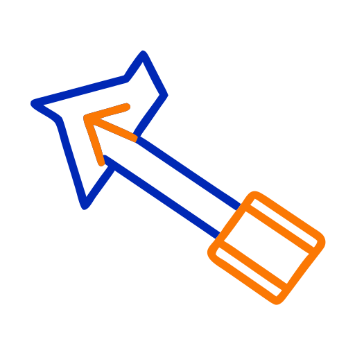

Raccolta Gare di Fisica
Aree
Argomenti
Metodi
Abilità
Objects
Prove
Cerca
Raccolta Gare di Fisica
Search
Cerca
Tema scuro
Tema chiaro
Modalità lettura
Esplora
Home
❯
methods
❯
Physical Modeling
Physical Modeling
Properties
1
tags
graph/method
02 lug 2026
1 minuto
graph/method

Method
—
4439
problemi/quesiti.
Problemi e quesiti
Vista grafico
Link entranti
Canada 1994 Locale Quiz — Quesito 4
Canada 1994 Locale Quiz — Quesito 6
Canada 1994 Locale Quiz — Quesito 7
Canada 1994 Locale Quiz — Quesito 8
Canada 1994 Locale Quiz — Quesito 9
Canada 1994 Locale Quiz — Quesito 10
Canada 1994 Locale Quiz — Quesito 23
Canada 1996 Locale Quiz — Quesito 3
Canada 1996 Locale Quiz — Quesito 21
Canada 1996 Locale Quiz — Quesito 22
Canada 1996 Locale Quiz — Quesito 28
Canada 1997 Locale Quiz — Quesito 10
Canada 1997 Locale Quiz — Quesito 13
Canada 1997 Locale Quiz — Quesito 15
Canada 1997 Locale Quiz — Quesito 16
Canada 1997 Locale Quiz — Quesito 18
Canada 1997 Locale Quiz — Quesito 21
Canada 1997 Locale Quiz — Quesito 28
Canada 1998 Locale Quiz — Quesito 1
Canada 1998 Locale Quiz — Quesito 3
Canada 1998 Locale Quiz — Quesito 4
Canada 1998 Locale Quiz — Quesito 6
Canada 1998 Locale Quiz — Quesito 10
Canada 1998 Locale Quiz — Quesito 12
Canada 1998 Locale Quiz — Quesito 16
Canada 1998 Locale Quiz — Quesito 21
Canada 1998 Locale Quiz — Quesito 22
Canada 1998 Locale Quiz — Quesito 24
Canada 1998 Locale Quiz — Quesito 28
Canada 1999 — Quesito 3
Canada 1999 — Quesito 16
Canada 1999 — Quesito 24
Canada 1999 — Quesito 28
Brasil 2006 — 1_lugar.pdf
OII 2011 1° Livello — Quesito 22
OII 2015 1° Livello — 1liv15T def.pdf — Quesito 1
OII 2015 1° Livello — 1liv15T def.pdf — Quesito 2
OII 2015 1° Livello — 1liv15T def.pdf — Quesito 7
OII 2015 1° Livello — 1liv15T def.pdf — Quesito 10
OII 2015 1° Livello — 1liv15T def.pdf — Quesito 15
OII 2015 1° Livello — 1liv15T def.pdf — Quesito 20
OII 2015 1° Livello — 1liv15T def.pdf — Quesito 22
OII 2015 1° Livello — 1liv15T def.pdf — Quesito 23
OII 2015 1° Livello — 1liv15T def.pdf — Quesito 26
OII 2015 1° Livello — 1liv15T def.pdf — Quesito 28
OII 2015 1° Livello — 1liv15T def.pdf — Quesito 30
OII 2015 1° Livello — 1liv15T def.pdf — Quesito 31
OII 2015 1° Livello — 1liv15T def.pdf — Quesito 33
OII 2015 1° Livello — 1liv15T def.pdf — Quesito 35
OII 2015 1° Livello — 1liv15T def.pdf — Quesito 36
OII 2015 1° Livello — 1liv15T def.pdf — Quesito 38
OII 2015 1° Livello — 1liv15T def.pdf — Quesito 40
OII 2016 1° Livello — Quesito 6
OII 2016 1° Livello — Quesito 13
OII 2016 1° Livello — Quesito 22
OII 2016 1° Livello — Quesito 24
OII 2016 1° Livello — Quesito 25
OII 2016 1° Livello — Quesito 27
OII 2016 1° Livello — Quesito 34
OII 2016 1° Livello — Quesito 38
OII 2016 1° Livello — Quesito 39
OII 2018 1° Livello Quiz — Quesito 3
OII 2020 1° Livello Quiz — Quesito 16
OII 2020 1° Livello Quiz — Quesito 32
OII 2020 1° Livello Quiz — Quesito 40
OII 2021 1° Livello — Quesito 2
OII 2021 1° Livello — Quesito 11
OII 2021 1° Livello — Quesito 24
OII 2021 1° Livello — Quesito 26
OII 2021 1° Livello — Quesito 28
OII 2021 1° Livello — Quesito 32
OII 2022 1° Livello — Quesito 2
OII 2022 1° Livello — Quesito 3
OII 2022 1° Livello — Quesito 9
OII 2022 1° Livello — Quesito 10
OII 2022 1° Livello — Quesito 12
OII 2022 1° Livello — Quesito 17
OII 2022 1° Livello — Quesito 19
OII 2022 1° Livello — Quesito 20
OII 2022 1° Livello — Quesito 21
OII 2022 1° Livello — Quesito 28
OII 2022 1° Livello — Quesito 29
OII 2022 1° Livello — Quesito 37
OII 2022 1° Livello — Quesito 38
OII 2023 1° Livello — Quesito 28
OII 2025 1° Livello — Quesito 4
OII 2025 1° Livello — Quesito 8
OII 2025 1° Livello — Quesito 16
OII 2025 1° Livello — Quesito 21
OII 2025 1° Livello — Quesito 22
OII 2025 1° Livello — Quesito 23
OII 2025 1° Livello — Quesito 24
OII 2025 1° Livello — Quesito 27
OII 2025 1° Livello — Quesito 28
OII 2025 1° Livello — Quesito 29
OII 2026 1° Livello — Quesito 5
OII 2026 1° Livello — Quesito 10
OII 2026 1° Livello — Quesito 19
OII 2026 1° Livello — Quesito 25
OII 2026 1° Livello — Quesito 35
OII 2004 1° Livello Quiz — Quesito 7
OII 2004 1° Livello Quiz — Quesito 11
OII 2004 1° Livello Quiz — Quesito 17
OII 2004 1° Livello Quiz — Quesito 23
OII 2004 1° Livello Quiz — Quesito 31
OII 2006 1° Livello — Quesito 1
OII 2006 1° Livello — Quesito 2
OII 2006 1° Livello — Quesito 3
OII 2006 1° Livello — Quesito 4
OII 2006 1° Livello — Quesito 5
OII 2006 1° Livello — Quesito 6
OII 2006 1° Livello — Quesito 7
OII 2006 1° Livello — Quesito 24
OII 2006 1° Livello — Quesito 34
OII 2006 1° Livello — Quesito 38
OII 2007 1° Livello — Quesito 6
OII 2007 1° Livello — Quesito 20
OII 2007 1° Livello — Quesito 21
OII 2008 1° Livello — Quesito 19
OII 2008 1° Livello — Quesito 37
OII 2008 1° Livello — Quesito 38
OII 2009 1° Livello — Quesito 40
OII 1998 1° Livello Quiz — 1lv98 (2 files merged).pdf — Quesito 19
OII 1999 1° Livello Quiz — 1lv99s (2 files merged).pdf — Quesito 3
OII 1999 1° Livello Quiz — 1lv99s (2 files merged).pdf — Quesito 13
OII 1999 1° Livello Quiz — 1lv99s (2 files merged).pdf — Quesito 25
Canada 2000 — Quesito 1
Canada 2000 — Quesito 4
Canada 2000 — Quesito 5
Canada 2000 — Quesito 6
Canada 2000 — Quesito 9
Canada 2000 — Quesito 10
Canada 2000 — Quesito 13
Canada 2000 — Quesito 15
Canada 2000 — Quesito 21
Canada 2000 — Quesito 22
Canada 2000 — Quesito 24
Canada 2000 — Quesito 25
Canada 2000 — Quesito 27
Canada 2000 — Quesito 28
Canada 2001 — Quesito 2
Canada 2001 — Quesito 6
Canada 2001 — Quesito 16
Canada 2001 — Quesito 17
Canada 2001 — Quesito 19
Canada 2001 — Quesito 21
Canada 2001 — Quesito 24
Canada 2002 — Quesito 1
Canada 2002 — Quesito 5
Canada 2002 — Quesito 7
Canada 2002 — Quesito 9
Canada 2002 — Quesito 11
Canada 2002 — Quesito 22
Canada 2002 — Quesito 23
Nordic 2003 — Quesito 1
Nordic 2003 — Quesito 2
Nordic 2003 — Quesito 3
Nordic 2003 — Quesito 4
Nordic 2003 — Quesito 5
Nordic 2003 — Quesito 6
Nordic 2003 — Quesito 7
Nordic 2003 — Quesito 8
Nordic 2003 — Quesito 1
Nordic 2003 — Quesito 2
Canada 2003 — Quesito 27
Canada 2004 — Quesito 19
Canada 2004 — Quesito 20
Canada 2004 — Quesito 25
Nordic 2005 — Quesito 8
Nordic 2005 — Quesito 9
Canada 2005 — Quesito 18
Nordic 2006 — Quesito 1
Nordic 2006 — Quesito 2
Nordic 2006 — Quesito 3
Nordic 2006 — Quesito 5
Nordic 2006 — Quesito 6
Nordic 2006 — Quesito 7
Nordic 2006 — Quesito 8
Canada 2006 — Quesito 6
Canada 2006 — Quesito 13
Canada 2006 — Quesito 16
ASOE 2007 — Quesito 1
ASOE 2007 — Quesito 2
ASOE 2007 — Quesito 3
ASOE 2007 — Quesito 9
ASOE 2007 — Quesito 16
Spagna 2007 — Quesito 12
USA 2007 — Quesito 21
USA 2007 — Quesito 4
Spagna 2007 — Quesito 2
Canada 2007 — Quesito 18
ASOE 2008 '' — Quesito 1
ASOE 2008 '' — Quesito 3
ASOE 2008 '' — Quesito 4
ASOE 2008 '' — Quesito 5
ASOE 2008 '' — Quesito 6
ASOE 2008 '' — Quesito 7
ASOE 2008 '' — Quesito 10
ASOE 2008 '' — Quesito 11
ASOE 2008 '' — Quesito 13
Spagna 2008 — Quesito 2
USA 2008 — Quesito 3
USA 2008 — Quesito 7
USAPhO 2008 Semifinal - Quesito 3
Canada 2008 — Quesito 3
Canada 2008 — Quesito 4
Canada 2008 — Quesito 11
Canada 2008 — Quesito 12
Canada 2008 — Quesito 14
Canada 2008 — Quesito 19
ASOE 2009 — Quesito 1
ASOE 2009 — Quesito 2
ASOE 2009 — Quesito 7
ASOE 2009 — Quesito 9
Nordic 2009 — Quesito 5
Nordic 2009 — Quesito 6
Nordic 2009 — Quesito 7
USA 2009 — Quesito 8
USA 2009 — Quesito 9
USA 2009 — Quesito 17
F=ma 2009 - Quesito 3
USA 2009 — Quesito 4
Russia na — Quesito 1
Russia na — Quesito 5
Russia na — Quesito 9
Russia na — Quesito 20
Russia na — Quesito 22
Russia na — Quesito 31
Russia na — Quesito 35
Russia na — Quesito 39
Russia na — Quesito 43
Russia na — Quesito 44
Russia na — Quesito 45
Russia na — Quesito 46
Russia na — Quesito 47
Nordic 2010 — Quesito 2
Nordic 2010 — Quesito 3
Nordic 2010 — Quesito 8
Nordic 2010 — Quesito 9
Austra 2010 — Quesito 6
Austra 2010 — Quesito 7
Austra 2010 — Quesito 12
Austra 2010 — Quesito 13
Austra 2010 — Quesito 14
Spagna 2010 — Quesito 3
Spagna 2010 — 2010 soluciones_09_10.pdf
Canada 2010 — Quesito 5
Canada 2010 — Quesito 6
ASOE 2011 — Quesito 1
ASOE 2011 — Quesito 3
ASOE 2011 — Quesito 4
Nordic 2011 — Quesito 5
Nordic 2011 — Quesito 9
Spagna 2011 — Quesito 3
Spagna 2011 — Quesito 5
Spagna 2011 — 2011 soluciones_10_11.pdf
USAPhO 2011 — Quesito 3
USA 2011 — Quesito 1
USA 2011 — Quesito 3
USA 2011 — Quesito 10
USA 2011 — Quesito 11
USA 2011 — Quesito 14
USA 2011 — Quesito 22
Svizze 2011 — Quesito 2
F=ma 2011 - Quesito 11
Canada 2011 — Quesito 1
Canada 2011 — Quesito 2
Canada 2011 — Quesito 3
Canada 2011 — Quesito 4
Canada 2011 — Quesito 7
Canada 2011 — Quesito 8
Canada 2011 — Quesito 9
Canada 2011 — Quesito 10
Canada 2011 — Quesito 11
Canada 2011 — Quesito 12
Canada 2011 — Quesito 15
Canada 2011 — Quesito 16
Canada 2011 — Quesito 18
Canada 2011 — Quesito 19
Canada 2011 — Quesito 20
Canada 2011 — Quesito 22
Canada 2011 — Quesito 25
USA 2012 — Quesito 23
Spagna 2012 — Quesito 2
USA 2012 — Quesito 5
Spagna 2012 — 2012 soluciones_11_12.pdf
Argent 2012 '' — Quesito 2
Argent 2012 '' — Quesito 4
Argent 2012 '' — Quesito 1
Argent 2012 '' — Quesito 2
Argent 2012 '' — Quesito 4
Argent 2012 '' — Quesito 3
Argent 2012 '' — Quesito 4
F=ma 2012 - Quesito 15
F=ma 2012 - Quesito 23
Canada 2012 — Quesito 2
Canada 2012 — Quesito 7
Canada 2012 — Quesito 14
Canada 2012 — Quesito 15
Canada 2012 — Quesito 19
Canada 2012 — Quesito 20
Canada 2012 — Quesito 21
Canada 2012 — Quesito 23
Canada 2012 — Quesito 24
UK 2012 — Quesito 3
UK 2012 — Quesito 7
UK 2012 — Quesito 16
ASOE 2013 — Quesito 1
ASOE 2013 — Quesito 3
ASOE 2013 — Quesito 4
ASOE 2013 — Quesito 7
ASOE 2013 — Quesito 8
ASOE 2013 — Quesito 9
ASOE 2013 — Quesito 10
ASOE 2013 — Quesito 11
ASOE 2013 — Quesito 14
Nordic 2013 — Quesito 2
Nordic 2013 — Quesito 4
Nordic 2013 — Quesito 5
USA 2013 — Quesito 3
USA 2013 — Quesito 10
USA 2013 — Quesito 17
USA 2013 — Quesito 21
Spagna 2013 — Quesito 3
USA 2013 — Quesito 5
OEF 2013 Locale Teorica — 2013 soluciones_12_13.pdf
Argent 2013 '' — Quesito 4
Argent 2013 '' — Quesito 3
F=ma 2013 - Quesito 3
USAPhO 2013 - Quesito 5
Canada 2013 — Quesito 4
Canada 2013 — Quesito 7
Canada 2013 — Quesito 13
Canada 2013 — Quesito 14
Canada 2013 — Quesito 15
Canada 2013 — Quesito 16
Canada 2013 — Quesito 19
Canada 2013 — Quesito 22
UK 2013 — Quesito 6
ASOE 2014 — Quesito 3
ASOE 2014 — Quesito 13
ASOE 2014 — Quesito 14
Nordic 2014 — Quesito 9
Nordic 2014 — 2014 est-fin_2014sol.pdf
USA 2014 — Quesito 3
USA 2014 — Quesito 12
USA 2014 — Quesito 13
USA 2014 — Quesito 17
USA 2014 — Quesito 19
Spagna 2014 — 2014 soluciones_13_14.pdf
Argent 2014 '' — Quesito 3
Argent 2014 '' — Quesito 4
Argent 2014 '' — Quesito 5
F=ma 2014 - Quesito 12
F=ma 2014 - Quesito 13
F=ma 2014 - Quesito 15
F=ma 2014 - Quesito 19
UK 2014 — Quesito 1
UK 2014 — Quesito 2
UK 2014 — Quesito 6
UK 2014 — Quesito 12
ASOE 2015 — Quesito 4
ASOE 2015 — Quesito 8
CAP 2015 — Quesito 4
CAP 2015 — Quesito 19
CAP 2015 — Quesito 22
USA 2015 — Quesito 1
USA 2015 — Quesito 2
USA 2015 — Quesito 3
USA 2015 — Quesito 11
USA 2015 — Quesito 14
USA 2015 — Quesito 16
USA 2015 — Quesito 19
USA 2015 — Quesito 20
Spagna 2015 — Quesito 2
Spagna 2015 — Quesito 2
Spagna 2015 — Quesito 3
Spagna 2015 — 2015 soluciones_2015.pdf
Argent 2015 — Quesito 1
Argent 2015 — Quesito 2
F=ma 2015 - Quesito 3
UK 2015 — Quesito 1
UK 2015 — Quesito 4
UK 2015 — Quesito 5
UK 2015 — Quesito 2
UK 2015 — Quesito 3
UK 2015 — Quesito 7
UK 2015 — Quesito 9
UK 2015 — Quesito 10
UK 2015 — Quesito 2
UK 2015 — Quesito 3
ASOE 2016 — Quesito 1
ASOE 2016 — Quesito 3
ASOE 2016 — Quesito 11
ASOE 2016 — Quesito 12
CAP 2016 — Quesito 5
CAP 2016 — Quesito 7
CAP 2016 — Quesito 10
CAP 2016 — Quesito 11
CAP 2016 — Quesito 12
CAP 2016 — Quesito 14
CAP 2016 — Quesito 20
CAP 2016 — Quesito 21
CAP 2016 — Quesito 25
CAP 2016 — Quesito 26
USA 2016 — Quesito 2
USA 2016 — Quesito 5
USA 2016 — Quesito 6
USA 2016 — Quesito 10
USA 2016 — Quesito 11
USA 2016 — Quesito 12
USA 2016 — Quesito 24
BPhO 2016 — Quesito 5
BPhO 2016 — 2016 NBPhO16-sol.pdf
USA 2016 — Quesito 1
USA 2016 — Quesito 4
Spagna 2016 — Quesito 3
Spagna 2016 — Quesito 3
Spagna 2016 — 2016 soluciones_2016.pdf
Argent 2016 — Quesito 2
Argent 2016 — Quesito 2
Argent 2016 — Quesito 5
F=ma 2016 - Quesito 1
F=ma 2016 - Quesito 2
F=ma 2016 - Quesito 12
F=ma 2016 - Quesito 21
F=ma 2016 - Quesito 23
F=ma 2016 - Quesito 24
USAPhO 2016 - Quesito 1
USAPhO 2016 - Quesito 3
USAPhO 2016 - Quesito 4
UK 2016 — Quesito 1
UK 2016 — Quesito 5
ASOE 2017 — Quesito 5
ASOE 2017 — Quesito 11
ASOE 2017 — Quesito 12
ASOE 2017 — Quesito 14
[CAP-HS 2017 National Prize Exam] — Quesito 1
[CAP-HS 2017 National Prize Exam] — Quesito 3
[CAP-HS 2017 National Prize Exam] — Quesito 4
[CAP-HS 2017 National Prize Exam] — Quesito 10
[CAP-HS 2017 National Prize Exam] — Quesito 13
[CAP-HS 2017 National Prize Exam] — Quesito 17
[CAP-HS 2017 National Prize Exam] — Quesito 18
[CAP-HS 2017 National Prize Exam] — Quesito 19
[CAP-HS 2017 National Prize Exam] — Quesito 23
[CAP-HS 2017 National Prize Exam] — Quesito 25
[CAP-HS 2017 National Prize Exam] — Quesito 28
F=ma 2017 — Quesito 4
F=ma 2017 — Quesito 9
F=ma 2017 — Quesito 10
BPhO 2017 — Quesito 5
BPhO 2017 — Quesito 7
Spagna 2017 — Quesito 2
Spagna 2017 — 2017 soluciones_2017.pdf
Argent 2017 — Quesito 1
Argent 2017 — Quesito 2
Argent 2017 — Quesito 3
UK 2017 — Quesito 1
UK 2017 — Quesito 2
UK 2017 — Quesito 7
UK 2017 — Quesito 9
UK 2017 — Quesito 15
UK 2017 — Quesito 2
Spagna 2018 '' — Quesito 3
F=ma 2018 — Quesito 7
F=ma 2018 — Quesito 8
F=ma 2018 — Quesito 14
F=ma 2018 — Quesito 16
F=ma 2018 — Quesito 17
F=ma 2018 — Quesito 18
F=ma 2018 — Quesito 19
F=ma 2018 — Quesito 22
F=ma 2018 — Quesito 24
F=ma 2018 — Quesito 25
F=ma 2018 — Quesito 1
F=ma 2018 — Quesito 6
F=ma 2018 — Quesito 7
F=ma 2018 — Quesito 10
F=ma 2018 — Quesito 11
F=ma 2018 — Quesito 12
F=ma 2018 — Quesito 16
F=ma 2018 — Quesito 18
F=ma 2018 — Quesito 22
BPhO 2018 — Quesito 6
BPhO 2018 — Quesito 9
USAPhO 2018 — Quesito 5
UK 2018 — Quesito 4
UK 2018 — Quesito 12
UK 2018 — Quesito 13
ASOE 2019 — Quesito 1
ASOE 2019 — Quesito 2
ASOE 2019 — Quesito 3
ASOE 2019 — Quesito 13
ASOE 2019 — Quesito 14
CAP 2019 — Quesito 21
[OFJaen 2019 Provincial] — 2019 Problemas con soluciones.pdf
Spagna 2019 — Quesito 2
Spagna 2019 — Quesito 4
USAPhO 2019 Nazionale Teorica — Quesito 5
UK 2019 — Quesito 3
UK 2019 — Quesito 5
UK 2019 — Quesito 6
UK 2019 — Quesito 10
UK 2019 — Quesito 11
UK 2019 — Quesito 12
UK 2019 — Quesito 13
UK 2019 — Quesito 14
UK 2019 — Quesito 16
UK 2019 — Quesito 17
UK 2019 — Quesito 18
UK 2019 — Quesito 19
UK 2019 — Quesito 20
ASOE 2020 — Quesito 1
ASOE 2020 — Quesito 4
ASOE 2020 — Quesito 5
ASOE 2020 — Quesito 6
ASOE 2020 — Quesito 11
ASOE 2020 — Quesito 12
ASOE 2020 — Quesito 13
ASOE 2020 — Quesito 15
ASOE 2020 — Quesito 17
ASOE 2020 — Quesito 18
ASOE 2020 — Quesito 19
ASOE 2020 — Quesito 20
BPhO 2020 — Quesito 5
Spagna 2020 '' — Quesito 2
Spagna 2020 — 2020 soluciones_2020_0.pdf
Spagna 2020 — Quesito 4
Spagna 2020 — Quesito 5
F=ma 2020 — Quesito 2
F=ma 2020 — Quesito 7
F=ma 2020 — Quesito 8
F=ma 2020 — Quesito 10
F=ma 2020 — Quesito 11
F=ma 2020 — Quesito 14
F=ma 2020 — Quesito 15
F=ma 2020 — Quesito 19
F=ma 2020 — Quesito 20
F=ma 2020 — Quesito 22
F=ma 2020 — Quesito 25
F=ma 2020 — Quesito 2
F=ma 2020 — Quesito 4
F=ma 2020 — Quesito 11
F=ma 2020 — Quesito 15
UK 2020 — Quesito 5
UK 2020 — Quesito 6
UK 2020 — Quesito 8
UK 2020 — Quesito 11
UK 2020 — Quesito 13
UK 2020 — Quesito 14
UK 2020 — Quesito 15
UK 2020 — Quesito 16
UK 2020 — Quesito 17
UK 2020 — Quesito 19
UK 2020 — Quesito 1
ASOE 2021 - Quesito 1
ASOE 2021 - Quesito 2
ASOE 2021 - Quesito 7
ASOE 2021 - Quesito 11
ASOE 2021 - Quesito 12
ASOE 2021 - Quesito 14
ASOE 2021 - Quesito 15
Spagna 2021 — 2021 soluciones_2021.pdf
F=ma 2021 — Quesito 1
F=ma 2021 — Quesito 2
F=ma 2021 — Quesito 4
F=ma 2021 — Quesito 9
F=ma 2021 — Quesito 11
F=ma 2021 — Quesito 13
F=ma 2021 — Quesito 14
F=ma 2021 — Quesito 16
F=ma 2021 — Quesito 17
F=ma 2021 — Quesito 18
F=ma 2021 — Quesito 20
F=ma 2021 — Quesito 23
UK 2021 — Quesito 8
UK 2021 — Quesito 15
UK 2021 — Quesito 21
UK 2021 — Quesito 22
UK 2021 — Quesito 3
ASOE 2022 - Quesito 1
ASOE 2022 - Quesito 8
ASOE 2022 - Quesito 12
BPhO 2022 — Quesito 8
Spagna 2022 — Quesito 5
F=ma 2022 — Quesito 9
F=ma 2022 — Quesito 10
F=ma 2022 — Quesito 14
F=ma 2022 — Quesito 17
F=ma 2022 — Quesito 18
F=ma 2022 — Quesito 20
F=ma 2022 — Quesito 21
F=ma 2022 — Quesito 22
F=ma 2022 — Quesito 23
F=ma 2022 — Quesito 25
F=ma 2022 — Quesito 2
F=ma 2022 — Quesito 4
F=ma 2022 — Quesito 5
F=ma 2022 — Quesito 10
F=ma 2022 — Quesito 11
F=ma 2022 — Quesito 14
F=ma 2022 — Quesito 23
Russia 2022 — Quesito 1
Russia 2022 — Quesito 2
Russia 2022 — Quesito 3
Russia 2022 — Quesito 4
Russia 2022 — Quesito 7
Russia 2022 — Quesito 9
Russia 2022 — Quesito 10
Russia 2022 — Quesito 11
Russia 2022 — Quesito 13
Russia 2022 — Quesito 17
Russia 2022 — Quesito 18
Russia 2022 — Quesito 21
Russia 2022 — Quesito 24
USA 2022 — Quesito 1
USA 2022 — Quesito 2
USA 2022 — Quesito 3
USA 2022 — Quesito 9
USAPhO 2022 — Quesito 6
CAP 2022 — Quesito 9
CAP 2022 — Quesito 17
CAP 2022 — Quesito 18
CAP 2022 — Quesito 19
CAP 2022 — Quesito 24
CAP 2022 — Quesito 25
UK 2022 — Quesito 1
UK 2022 — Quesito 3
UK 2022 — Quesito 2
UK 2022 — Quesito 7
UK 2022 — Quesito 9
UK 2022 — Quesito 15
UK 2022 — Quesito 16
UK 2022 — Quesito 4
OII 2022 1° Livello Quiz — Quesito 3
OII 2022 1° Livello Quiz — Quesito 17
ASOE 2023 — Quesito 8
ASOE 2023 — Quesito 9
ASOE 2023 — Quesito 10
ASOE 2023 — Quesito 11
ASOE 2023 — Quesito 12
ASOE 2023 — Quesito 13
ASOE 2023 — Quesito 14
ASOE 2023 — Quesito 15
ASOE 2023 — Quesito 16
ASOE 2023 — Quesito 19
ASOE 2023 — Quesito 22
ASOE 2023 — Quesito 26
ASOE 2023 — Quesito 27
ASOE 2023 — Quesito 28
ASOE 2023 — Quesito 32
ASOE 2023 — Quesito 33
ASOE 2023 — Quesito 34
ASOE 2023 — Quesito 35
ASOE 2023 — Quesito 36
ASOE 2023 — Quesito 37
ASOE 2023 — Quesito 38
ASOE 2023 — Quesito 39
ASOE 2023 — Quesito 40
ASOE 2023 — Quesito 41
ASOE 2023 — Quesito 42
ASOE 2023 — Quesito 43
ASOE 2023 — Quesito 48
Spagna 2023 — 2023 P-EXPERIMENTAL-Varilla resuelto.pdf
Spagna 2023 — 2023 Soluciones_2023.pdf
Spagna 2023 — Quesito 4
Spagna 2023 — Quesito 5
CAP 2023 — Quesito 18
CAP 2023 — Quesito 21
F=ma 2023 — Quesito 3
F=ma 2023 — Quesito 14
F=ma 2023 — Quesito 15
F=ma 2023 — Quesito 18
F=ma 2023 — Quesito 23
F=ma 2023 — Quesito 24
UK 2023 — Quesito 7
UK 2023 — Quesito 9
UK 2023 — Quesito 14
UK 2023 — Quesito 20
OII 2023 1° Livello — Quesito 17
OII 2023 1° Livello — Quesito 28
OII 2023 1° Livello — Quesito 40
Spagna 2024 — Quesito 1
Spagna 2024 — Quesito 2
Spagna 2024 — Quesito 4
Spagna 2024 — Quesito 5
Spagna 2024 — 2024 Soluciones_2024.pdf
CAP 2024 Nazionale — 2024_CAP_Exam_with_solutions.pdf
CAP 2024 Nazionale — 2024_CAP_Exam_with_solutions_May62025.pdf
F=ma 2024 — Quesito 6
F=ma 2024 — Quesito 7
F=ma 2024 — Quesito 16
F=ma 2024 — Quesito 17
F=ma 2024 — Quesito 19
F=ma 2024 — Quesito 24
F=ma 2024 — Quesito 25
UK 2024 — Quesito 11
UK 2024 — Quesito 13
UK 2024 — Quesito 16
UK 2024 — Quesito 17
USAPhO 2024 — Quesito 1
UK 2024 — Quesito 2
Spagna 2025 — Quesito 2
Spagna 2025 — Quesito 4
Spagna 2025 — 2025 Soluciones_2025.pdf
Spagna 2025 — Quesito 1
Spagna 2025 — Quesito 2
CAP2025 2025 Nazionale — 2025_CAP_Exam_with_solutions.pdf
F=ma 2025 — Quesito 3
F=ma 2025 — Quesito 4
F=ma 2025 — Quesito 6
F=ma 2025 — Quesito 8
F=ma 2025 — Quesito 9
F=ma 2025 — Quesito 16
F=ma 2025 — Quesito 17
F=ma 2025 — Quesito 19
F=ma 2025 — Quesito 20
USAPhO 2025 — Quesito 1
USAPhO 2025 — Quesito 3
Spagna 2026 — Quesito 2
Spagna 2026 — Quesito 3
[CAP 2026 National] — 2026_CAP_Exam_with_solutions.pdf
OII 2009 2° Livello — Problema 2
OII 2009 2° Livello — Problema 3
OII 2010 2° Livello Quiz — Problema 13
OII 2012 2° Livello — Problema 1
OII 2012 2° Livello — Problema 2
OII 2012 2° Livello — Problema 3
OII 2012 2° Livello — Problema 7
OII 2014 2° Livello — Problema 2
OII 2014 2° Livello — Problema 11
OII 2015 2° Livello — 2liv15T Def.pdf — Problema 1
OII 2015 2° Livello — 2liv15T Def.pdf — Problema 2
OII 2015 2° Livello — 2liv15T Def.pdf — Problema 6
OII 2015 2° Livello — 2liv15T Def.pdf — Problema 10
OII 2015 2° Livello — 2liv15T Def.pdf — Problema 13
OII 2016 2° Livello — Problema 2
OII 2016 2° Livello — Problema 6
OII 2017 2° Livello — Problema 1
OII 2017 2° Livello — Problema 7
OII 2017 2° Livello — Problema 10
OII 2018 2° Livello — Problema 3
OII 2018 2° Livello — Problema 4
OII 2018 2° Livello — Problema 6
OII 2018 2° Livello — Problema 7
OII 2018 2° Livello — Problema 10
OII 2019 2° Livello — Problema 6
OII 2020 2° Livello — Problema 10
OII 2021 2° Livello — Problema 4
OII 2021 2° Livello — Problema 7
OII 2021 2° Livello — Problema 9
OII 2022 2° Livello — Problema 5
OII 2022 2° Livello — Problema 8
OII 2023 2° Livello — Problema 3
OII 2024 2° Livello — Problema 4
OII 2024 2° Livello — Problema 11
OII 2024 2° Livello — Problema 12
OII 2025 2° Livello — Problema 4
OII 2025 2° Livello — Problema 5
OII 2025 2° Livello — Problema 9
OII 2025 2° Livello — Problema 10
OII 2001 2° Livello Quiz — Problema 13
OII 2002 2° Livello Quiz — Problema 1
OII 2002 2° Livello Quiz — Problema 3
OII 2002 2° Livello Quiz — Problema 4
OII 2002 2° Livello Quiz — Problema 5
OII 2002 2° Livello Quiz — Problema 6
OII 2002 2° Livello Quiz — Problema 7
OII 2002 2° Livello Quiz — Problema 8
OII 2002 2° Livello Quiz — Problema 10
OII 2004 2° Livello — Problema 1
OII 2004 2° Livello — Problema 2
OII 2004 2° Livello — Problema 3
OII 2004 2° Livello — Problema 4
OII 2005 2° Livello Teorica — Problema 5
OII 2005 2° Livello Teorica — Problema 8
OII 2005 2° Livello Teorica — Problema 12
OII 2006 2° Livello Teorica — Problema 5
OII 2006 2° Livello Teorica — Problema 6
OII 2008 2° Livello — Problema 2
OII 2008 2° Livello — Problema 3
OII 2008 2° Livello — Problema 4
OII 2008 2° Livello — Problema 5
OII 2008 2° Livello — Problema 6
OII 2008 2° Livello — Problema 8
OII 2008 2° Livello — Problema 11
OII 2008 2° Livello — Problema 12
OII 2008 2° Livello — Problema 13
OII 2008 2° Livello — Problema 14
OII 2011 2° Livello — Problema 1
OII 2011 2° Livello — Problema 7
OII 1999 2° Livello Teorica — 2lv99s (2 files merged).pdf — Problema 1
Svizze 2023 — Quesito 1
Svizze 2025 — Quesito 2
Svizze 2025 — Quesito 12
Svizze 2025 — Quesito 16
Svizze 2025 — Quesito 19
Svizze 2025 — Quesito 20
Svizze 2025 — Quesito 2
Svizze 2025 — Quesito 3
Svizze 2025 — Quesito 4
Svizze 2025 — Quesito 11
Svizze 2025 — Quesito 12
Svizze 2025 — Quesito 14
Svizze 2025 — Quesito 16
Svizze 2025 — Quesito 20
Svizze 2026 — Quesito 2
Svizze 2026 — Quesito 3
Svizze 2026 — Quesito 4
Svizze 2026 — Quesito 7
Svizze 2026 — Quesito 11
Svizze 2026 — Quesito 12
Svizze 2026 — Quesito 13
Svizze 2026 — Quesito 15
Svizze 2026 — Quesito 20
Svizze 2026 — Quesito 21
Svizze 2026 — Quesito 23
Svizze 2026 — Quesito 24
Svizze 2026 — Quesito 25
Svizze 2026 — Quesito 2
Svizze 2026 — Quesito 3
Svizze 2026 — Quesito 4
Svizze 2026 — Quesito 7
Svizze 2026 — Quesito 9
Svizze 2026 — Quesito 11
Svizze 2026 — Quesito 12
Svizze 2026 — Quesito 13
Svizze 2026 — Quesito 14
Svizze 2026 — Quesito 15
Svizze 2026 — Quesito 19
Svizze 2026 — Quesito 20
Svizze 2026 — Quesito 23
Svizze 2026 — Quesito 24
Svizze 2026 — Quesito 25
IPhO 2008 — Quesito 1
IPhO 2008 — Quesito 2
IPhO 2011 — Quesito 1
IPhO 2011 — Quesito 3
IPhO 2012 — Quesito 1
IPhO 2012 — Quesito 2
IPhO 2012 — Quesito 3
IPhO 2013 — Quesito 1
IPhO 2013 — Quesito 3
IPhO 2013 — Quesito 1
IPhO 2013 — Quesito 2
IPhO 2013 — Quesito 3
IPhO 2013 — Quesito 4
IPhO 2014 — Quesito 1
IPhO 2014 — Quesito 2
IPhO 2014 — Quesito 3
IPhO 2014 — Quesito 1
IPhO-DE-R1 2015 Round 1 — 46_IPhO_2015_1Rd_Aufgaben_Loesungen.pdf
IPhO 2015 — Quesito 1
IPhO 2015 — Quesito 2
IPhO 2015 — Quesito 4
[IPhO-DE 2015 Round 2] — 46_IPhO_2015_2Rd_Aufgaben_Loesungen.pdf
[IPhO-DE 2016 Round 1] — 47_IPhO_2016_1Rd_Aufgaben_Loesungen.pdf
IPhO 2016 — Quesito 1
IPhO 2016 — Quesito 2
IPhO-DE-2017-R1 2017 Round 1 — 48_IPhO_2017_1Rd_Aufgaben_Loesungen.pdf
IPhO 2017 — Quesito 2
[IPhO-DE-2Rd 2017 Round 2] — 48_IPhO_2017_2Rd_Aufgaben_Loesungen_web.pdf
IPhO 2017 — Quesito 1
[IPhO-DE-1Rd 2018 Round 1] — 49_IPhO_2018_1Rd_Aufgaben_Loesungen.pdf
IPhO 2018 — Quesito 1
IPhO 2018 — Quesito 3
[IPhO-DE 2019 Round 1] — 50_IPhO_2019_1Rd_Aufgaben_Loesungen.pdf
IPhO 2019 — Quesito 2
IPhO 2019 — Quesito 3
IPhO 2019 — Quesito 4
[IPhO-DE-2Rd 2019 Round 2] — 50_IPhO_2019_2Rd_Aufgaben_Loesungen_web.pdf
IPhO 2019 — Quesito 1
IPhO 2019 — Quesito 3
IPhO 2019 — Quesito 8
IPhO 2019 — Quesito 10
IPhO 2019 — Quesito 13
IPhO-DE-R1 2020 Round 1 — 51_IPhO_2020_1Rd_Aufgaben_Loesungen.pdf
IPhO 2020 — Quesito 1
IPhO 2020 — Quesito 1
IPhO 2020 — Quesito 3
IPhO 2020 — Quesito 5
IPhO 2020 — Quesito 7
IPhO 2020 — Quesito 8
IPhO 2020 — Quesito 9
IPhO-DE-2Rd-2020 2020 Round 2 — 51_IPhO_2020_2Rd_Aufgaben_Loesungen_web.pdf
IPhO 2021 — Quesito 1
IPhO 2021 — Quesito 8
IPhO 2021 — Quesito 9
IPhO-DE-2Rd-2021 2021 Round 2 — 51_IPhO_2021_2Rd_Aufgaben_Loesungen_web.pdf
[IPhO-DE 2021 Round 1] — 52_IPhO_2021_1Rd_Aufgaben_Loesungen.pdf
IPhO 2021 — Quesito 1
IPhO 2021 — Quesito 3
[IPhO-DE 2022 Round 1] — 52_IPhO_2022_1Rd_Aufgaben_Loesungen.pdf
IPhO 2022 — Quesito 1
IPhO 2022 — Quesito 2
IPhO 2022 — Quesito 4
IPhO 2022 — Quesito 5
IPhO 2022 — Quesito 6
IPhO 2022 — Quesito 7
IPhO 2022 — Quesito 10
IPhO-DE-R2 2022 Round 2 — 52_IPhO_2022_2Rd_Aufgaben_Loesungen_web.pdf
IPhO 2023 — Quesito 1
IPhO 2023 — Quesito 3
IPhO 2023 — Quesito 6
IPhO 2023 — Quesito 1
IPhO 2023 — Quesito 2
IPhO 2023 — Quesito 3
IPhO 2023 — Quesito 6
IPhO 2023 — Quesito 7
IPhO 2023 — Quesito 8
[IPhO-DE 2024 Round 1] — 54_IPhO_2024_1Rd_Aufgaben_Loesungen.pdf
IPhO 2024 — Quesito 2
IPhO 2024 — Quesito 2
IPhO 2024 — Quesito 3
IPhO-DE-R1 2025 Round 1 — 55_IPhO_2025_1Rd_Aufgaben_Loesungen.pdf
IPhO 2025 — Quesito 1
IPhO 2025 — Quesito 3
IPhO 2025 — Quesito 1
IPhO 2025 — Quesito 3
IPhO 2025 — Quesito 9
[OFJaen] — A-Cuestiones y problemas resueltos.pdf
GaS 2024 Allenamento Online — Problema 9
GaS 2024 Allenamento Online — Problema 2
GaS 2024 Allenamento Online — Problema 8
GaS 2024 Allenamento Online — Problema 13
GaS 2024 Allenamento Online — Problema 1
GaS 2024 Allenamento Online — Problema 8
GaS 2024 Allenamento Online — Problema 10
GaS 2025 Allenamento Quiz — Problema 1
GaS 2025 Allenamento Quiz — Problema 2
GaS 2025 Allenamento Quiz — Problema 5
GaS 2025 Allenamento Quiz — Problema 6
GaS 2025 Allenamento Quiz — Problema 8
GaS 2025 Allenamento Quiz — Problema 9
GaS 2025 Allenamento Quiz — Problema 14
GaS 2025 Allenamento Quiz — Problema 1
GaS 2023 Allenamento Teorica — Problema 3
GaS 2023 Allenamento Teorica — Problema 10
GaS 2023 Allenamento Teorica — Problema 11
GaS 2026 Locale Squadre — Problema 4
GaS 2026 Locale Squadre — Problema 5
GaS 2026 Locale Squadre — Problema 9
GaS 2026 Locale Squadre — Problema 3
GaS 2026 Locale Squadre — Problema 10
GaS 2026 Locale Squadre — Problema 5
GaS 2026 Locale Squadre — Problema 8
GaS 2026 Locale Squadre — Problema 12
Anacleto 2007–2019 — Problema 4
Anacleto 2007–2019 — Problema 9
Anacleto 2022 Nazionale Sperimentale — Problema 1
Anacleto 2022 Nazionale Sperimentale — Problema 2
Anacleto 2022 Nazionale Sperimentale — Problema 3
Anacleto 2023 Nazionale Sperimentale — Problema 2
Anacleto 2024 Nazionale Sperimentale — Problema 2
Anacleto 2024 Nazionale Sperimentale — Problema 3
Anacleto 2025 Nazionale Sperimentale — Problema 1
Anacleto 2025 Nazionale Sperimentale — Problema 2
Anacleto 2025 Nazionale Sperimentale — Problema 3
Anacleto 2025 Nazionale Sperimentale — Problema 4
Anacleto 2025 Nazionale Sperimentale — Problema 5
Anacleto 2025 Nazionale Sperimentale — Problema 6
Anacleto 2025 Nazionale Sperimentale — Problema 7
Spagna na — Quesito 3
APhO 2000 — Teorica — Quesito 3
APhO 2003 — Teorica — Quesito 2
APhO 2005 — Sperimentale — Quesito 1
APhO 2007 - Teorica - Quesito 1
APhO 2009 — Teorica — Quesito 3
APhO 2010 — Sperimentale — Quesito 1
APhO 2024 — Teorica — Quesito 1
Russia 2020 — Quesito 2
Russia 2020 — Quesito 3
IPhO 2007 — Problema 4
BPhO 2003 Locale Round 1 — Quesito 7
BPhO 2006 Locale Round 1 — Quesito 2
BPhO 2007 Locale Round 1 — Quesito 3
BPhO 2007 Locale Round 1 — Quesito 5
BPhO 2009 Locale Round 1 — Quesito 4
BPhO 2010 — Quesito 5
BPhO 2010 — Quesito 6
BPhO 2011 — Quesito 5
BPhO 2011 — Quesito 15
BPhO 2011 — Quesito 3
BPhO 2003 — Quesito 2
BPhO 2003 — Quesito 4
BPhO 2004 — Quesito 1
BPhO 2005 '' — Quesito 4
BPhO 2006 — Quesito 1
BPhO 2006 — Quesito 5
BPhO 2007 — Quesito 1
BPhO 2010 — Quesito 2
BPhO 2010 — Quesito 6
BPhO 2010 — Quesito 10
Russia 2011 — Quesito 2
Russia 2013 — Quesito 2
Russia 2013 — Quesito 2
Russia 2018 — Quesito 1
Russia 2018 — Quesito 4
Russia 2018 — Quesito 6
Colomb 2001 — Quesito 2
Colomb 2001 — Quesito 16
Colomb 2002 — Quesito 2
Colomb 2002 — Quesito 5
Colomb 2002 — Quesito 9
Colomb 2002 — Quesito 10
Colomb 2002 — Quesito 18
Colomb 2002 — Quesito 19
Colomb 2002 — Quesito 20
Colomb 2003 — Quesito 5
Colomb 2003 — Quesito 20
Colomb 2005 — Quesito 6
Colomb 2005 — Quesito 13
Colomb 2005 — Quesito 14
Colomb 2005 — Quesito 15
Colomb 2005 — Quesito 17
Colomb 2005 — Quesito 18
OII 2009 Nazionale — Problema 1
OII 2009 Nazionale — Problema 1
OII 2009 Nazionale — Problema 2
OII 2009 Nazionale — Problema 3
OII 2009 Nazionale — Problema 4
OII na Nazionale Sperimentale — COPOLI14Sp def.pdf — Problema 2
OII na Nazionale Sperimentale — Problema 1
OII 2017 Nazionale — Problema 1
OII 2010 Nazionale — Problema 1
Russia 2017 — Quesito 6
Russia 2018 — Quesito 6
Russia 2019 — Quesito 6
Argent 2004 Locale — Quesito 29
Argent 2004 Locale — Quesito 66
Argent 2007 Locale — Quesito 54
Argent 2007 Locale — Quesito 87
Argent 2008 Locale — Quesito 8
Argent 2008 Locale — Quesito 101
Argent 2008 Locale — Quesito 107
Argent 2008 Locale — Quesito 136
Argent 2008 Locale — Quesito 141
Argent 2008 Locale — Quesito 41
Argent 2008 Locale — Quesito 82
Argent 2009 Locale — Quesito 2
Argent 2009 Locale — Quesito 117
Argent 2009 Locale — Quesito 129
Argent 2009 Locale — Quesito 130
Argent 2009 Locale — Quesito 134
Argent 2009 Locale — Quesito 135
Argent 2009 Locale — Quesito 137
Argent 2009 Locale — Quesito 28
Argent 2009 Locale — Quesito 30
Argent 2009 Locale — Quesito 33
Argent 2009 Locale — Quesito 36
Argent 2009 Locale — Quesito 40
Argent 2009 Locale — Quesito 45
Argent 2009 Locale — Quesito 49
Argent 2009 Locale — Quesito 56
Argent 2009 Locale — Quesito 64
Argent 2009 Locale — Quesito 67
Argent 2009 Locale — Quesito 68
Argent 2009 Locale — Quesito 69
Argent 2009 Locale — Quesito 72
Argent 2009 Locale — Quesito 74
Argent 2009 Locale — Quesito 75
Argent 2009 Locale — Quesito 76
Argent 2009 Locale — Quesito 77
Argent 2009 Locale — Quesito 78
Argent 2009 Locale — Quesito 80
Argent 2009 Locale — Quesito 82
Argent 2009 Locale — Quesito 86
Argent 2009 Locale — Quesito 89
Argent 2009 Locale — Quesito 95
Argent 2011 Locale — Quesito 156
Argent 2011 Locale — Quesito 167
Argent 2011 Locale — Quesito 36
Argent 2011 Locale — Quesito 41
Argent 2011 Locale — Quesito 46
Argent 2011 Locale — Quesito 58
Argent 2011 Locale — Quesito 60
Argent 2011 Locale — Quesito 92
Argent 2011 Locale — Quesito 94
Argent 2012 Locale — Quesito 78
Argent 2014 Locale — Quesito 1
Argent 2014 Locale — Quesito 3
Argent 2014 Locale — Quesito 4
Argent 2014 Locale — Quesito 6
Argent 2014 Locale — Quesito 112
Argent 2014 Locale — Quesito 113
Argent 2014 Locale — Quesito 12
Argent 2014 Locale — Quesito 142
Argent 2014 Locale — Quesito 151
Argent 2014 Locale — Quesito 34
Argent 2014 Locale — Quesito 43
Argent 2014 Locale — Quesito 44
Argent 2014 Locale — Quesito 45
Argent 2014 Locale — Quesito 68
Argent 2019 Locale — Quesito 160
Argent 2019 Locale — Quesito 94
Argent 2019 Locale — Quesito 97
Argent na allenamento — Quesito 9
Argent na allenamento — Quesito 14
Argent na allenamento — Quesito 17
Argent na allenamento — Quesito 8
Argent na allenamento — Quesito 19
Argent na allenamento — Quesito 23
Argent na '' — Quesito 1
Argent na '' — Quesito 2
Argent na '' — Quesito 3
Argent na '' — Quesito 4
Argent na '' — Quesito 5
Argent na '' — Quesito 6
Argent na '' — Quesito 7
Argent na '' — Quesito 8
Argent na '' — Quesito 9
Argent na '' — Quesito 10
Argent na '' — Quesito 20
Argent na '' — Quesito 23
Anacleto 2003 Teoria — DR_2003-20012.pdf
Anacleto 2023 Nazionale Quiz — Problema P2
OII na Sperimentale — Problema 1
OII na Sperimentale — Problema 2
Russia na — Quesito 1
Russia na — Quesito 2
Russia na — Quesito 3
Russia na — Quesito 4
Russia na — Quesito 5
Russia na — Quesito 6
Russia na — Quesito 7
Russia 2018 — Quesito 1
Svizze 2017 — Quesito 1
Svizze 2017 — Quesito 2
Svizze 2017 — Quesito 4
Svizze 2017 — Quesito 6
Svizze 2017 — Quesito 7
Svizze 2017 — Quesito 11
Svizze 2017 — Quesito 13
Svizze 2018 — Quesito 10
Svizze 2019 — Quesito 22
OII na Teorica — Problema 1
OII na Sperimentale — Problema 1
OII na Teorica — Problema 1
OII na Teorica — Problema 3
OII na Sperimentale — Problema 1
OII na Sperimentale — Problema 2
OII 2020 Teorica — Problema 2
OII 2021 Sperimentale — Problema 1
OII 2021 Sperimentale — Problema 2
OII 2021 Sperimentale — Problema 3
OII 2021 Sperimentale — Problema 4
OII 2021 Sperimentale — Problema 5
OII 2021 Sperimentale — Problema 6
OII 2022 Sperimentale — Problema 1
OII 2022 Sperimentale — Problema 2
OII 2022 Sperimentale — Problema 3
OII 2023 Sperimentale — Problema 1
OII 2023 Sperimentale — Problema 2
OII 2024 Sperimentale — Problema 3
OII 2024 Sperimentale — Problema 5
OII 2025 Sperimentale — Problema 2
OII 2025 Sperimentale — Problema 3
OII na Sperimentale — Problema 1
OII na Sperimentale — Problema 1
OII na Sperimentale — Problema 1
OII na Sperimentale — Problema 1
OII na Sperimentale — Problema 2
OII na Sperimentale — Problema 3
OII na Sperimentale — Problema 4
OII na Sperimentale — Problema 5
OII na Sperimentale — Problema 8
OII na Sperimentale — Problema 9
OII na Sperimentale — Problema 10
OII na Sperimentale — Problema 1
OII na Sperimentale — Problema 2
OII na Sperimentale — Problema 4
OII na Sperimentale — Problema 5
OII na Sperimentale — Problema 6
OII na Sperimentale — Problema 7
OII na Sperimentale — Problema 8
OII na Sperimentale — Problema 9
OII na Sperimentale — Problema 10
OII na '' — Problema 1
OII na Teorica — Problema 1
OII na Teorica — Problema 1
OII na Teorica — Problema 3
OII na Teorica — Problema 1
OII na Teorica — Problema 1
OII na Teorica — Problema 3
OII na Teorica — Problema 1
Spagna 2024 — Quesito 1
Spagna 2024 — Quesito 4
Spagna 2025 — Quesito 4
OII na Sperimentale — Problema 2
OII na Sperimentale — Problema 4
OII na Sperimentale — Problema 6
OII na Sperimentale — Problema 8
OII na Sperimentale — Problema 1
OII na Sperimentale — Problema 2
OII na Sperimentale — Problema 3
OII na Sperimentale — Problema 4
OII na Sperimentale — Problema 5
OII na Sperimentale — Problema 6
OII na Sperimentale — Problema 7
OII na Sperimentale — Problema 8
OII na Sperimentale — Problema 9
OII na Sperimentale — Problema 10
OII na '' — Problema 1
OII na '' — Problema 1
OII na '' — Problema 2
Brasil 2023 — fase1_gab_v2.pdf
Brasil 2025 — fase1_n1.pdf
Brasil 2024 — Quesito 5
Brasil 2024 — Quesito 6
Brasil 2024 — Quesito 8
Brasil 2024 — Quesito 9
Brasil 2024 — Quesito 11
Brasil 2024 — Quesito 12
Brasil 2025 — fase1_n2.pdf
Brasil 2024 — Quesito 1
Brasil 2024 — Quesito 2
Brasil 2024 — Quesito 3
Brasil 2024 — Quesito 8
Brasil 2024 — Quesito 9
Brasil 2024 — Quesito 11
Brasil 2024 — Quesito 14
Brasil 2024 — Quesito 15
Brasil 2024 — Quesito 17
Brasil 2024 — Quesito 19
Brasil 2025 — fase1_n3.pdf
Brasil 2024 — Quesito 4
Brasil 2024 — Quesito 16
Brasil 2025 — Quesito 2
Brasil 2025 — Quesito 5
Brasil 2025 — Quesito 8
Brasil 2025 — Quesito 9
Brasil 2025 — Quesito 12
Brasil 2025 — Quesito 14
Brasil 2025 — fase2_n1.pdf
Brasil 2024 — Quesito 1
Brasil 2024 — Quesito 3
Brasil 2024 — Quesito 4
Brasil 2024 — Quesito 5
Brasil 2024 — Quesito 7
Brasil 2025 — fase2_n2.pdf
Brasil 2024 — Quesito 1
Brasil 2024 — Quesito 4
Brasil 2024 — Quesito 6
Brasil 2024 — Quesito 7
Brasil 2024 — Quesito 10
Brasil 2025 — fase2_n3.pdf
Svizze 2026 — Quesito 1
Svizze 2026 — Quesito 2
Svizze 2026 — Quesito 3
Svizze 2026 — Quesito 4
Svizze 2026 — Quesito 5
Svizze 2026 — Quesito 6
Svizze 2026 — Quesito 7
Svizze 2026 — Quesito 1
Svizze 2026 — Quesito 2
Svizze 2026 — Quesito 3
Svizze 2026 — Quesito 4
Svizze 2026 — Quesito 5
Svizze 2026 — Quesito 6
Svizze 2018 '' — Quesito 1
Svizze 2018 '' — Quesito 2
Svizze 2018 '' — Quesito 3
Svizze 2018 '' — Quesito 4
Svizze 2019 — Quesito 1
OII na Sperimentale — Problema 1
OII na Sperimentale — Problema 2
OII na Sperimentale — Problema 3
OII na Sperimentale — Problema 4
OII na Sperimentale — Problema 7
OII na Sperimentale — Problema 9
Svizze 2017 — Quesito 6
GaS 2023 Nazionale Teorica — Problema 4
OII 2021 2° Livello — Problema 3
Russia 2019 '' — Quesito 1
Russia 2019 '' — Quesito 7
Russia 2019 '' — Quesito 10
Russia 2019 '' — Quesito 13
Russia 2020 — Quesito 1
Russia 2020 — Quesito 3
Russia 2020 — Quesito 7
Russia 2020 — Quesito 9
Russia na — Quesito 2
Russia na — Quesito 5
Russia na — Quesito 8
GPhO 2022 — Quesito 2
HKPhO 2009 — Quesito 5
HKPhO 2009 — Quesito 19
HKPhO 2010 — Quesito 2
HKPhO 2010 — Quesito 9
HKPhO 2010 — Quesito 11
HKPhO 2011 — Junior — Quesito 5
HKPhO 2011 — Junior — Quesito 6
HKPhO 2011 — Junior — Quesito 7
HKPhO 2012 — Junior — Quesito 2
HKPhO 2012 — Junior — Quesito 5
HKPhO 2012 — Junior — Quesito 8
HKPhO 2013 — Quesito 9
HKPhO 2013 — Quesito 16
HKPhO 2014 — Quesito 1
HKPhO 2014 — Quesito 3
HKPhO 2014 — Quesito 10
HKPhO 2014 — Quesito 15
HKPhO 2014 — Quesito 16
HKPhO 2014 — Quesito 21
HKPhO 2015 — Quesito 13
HKPhO 2015 — Quesito 18
HKPhO 2016 — Quesito 2
HKPhO 2017 — Quesito 2
HKPhO 2017 — Quesito 8
HKPhO 2017 — Quesito 16
HKPhO 2018 — Quesito 3
HKPhO 2018 — Quesito 6
HKPhO 2018 — Quesito 7
HKPhO 2018 — Quesito 9
HKPhO 2018 — Quesito 10
HKPhO 2020 — Quesito 4
HKPhO 2020 — Quesito 20
HKPhO 2020 — Quesito 24
HKPhO 2021 — Quesito 1
HKPhO 2021 — Quesito 2
HKPhO 2021 — Quesito 4
HKPhO 2021 — Quesito 5
HKPhO 2021 — Quesito 8
HKPhO 2021 — Quesito 12
HKPhO 2021 — Quesito 13
HKPhO 2021 — Quesito 18
OII na Sperimentale — Problema 1
INAO 2018 — Problema 1
INAO 2018 — Problema 3
INAO 2018 — Problema 4
INAO 2018 — Problema 5
INAO 2018 — Problema 6
INAO 2019 — Problema 1
INAO 2019 — Problema 4
INAO 2019 — Problema 5
INAO 2020 — Problema 1
INAO 2020 — Problema 4
INAO 2020 — Problema 7
INAO 2023 — Problema 3
INAO 2023 — Problema 6
INAO 2024 — Quesito 1
INAO 2024 — Quesito 3
INAO 2024 — Quesito 4
INAO 2024 — Quesito 5
INAO 2024 — Problema 1
INAO 2024 — Problema 3
INAO 2024 — Problema 4
INAO 2024 — Problema 5
INAO 2025 — Problema 3
INAO 2025 — Problema 5
INAO 2025 — Problema 6
INAO 2025 — Problema 8
INAO 2025 — Problema 9
INAO 2025 — Problema 10
INAO Junior 2009 — Problema 2
INAO Junior 2009 — Problema 4
INAO Junior 2009 — Problema 5
INAO Junior 2009 — Problema 7
INAO Junior 2009 — Problema 15
INAO Junior 2010 — Problema 1
INAO Junior 2010 — Problema 2
INAO Junior 2010 — Problema 3
INAO Junior 2010 — Problema 4
INAO Junior 2010 — Problema 5
INAO Junior 2010 — Problema 8
INAO Junior 2010 — Problema 9
INAO Junior 2010 — Problema 12
INAO Junior 2010 — Problema 13
INAO Junior 2010 — Problema 15
INAO Junior 2010 — Problema 17
INAO Junior 2010 — Problema 18
INAO Senior 2009 — Problema 2
INAO Senior 2009 — Problema 4
INAO Senior 2009 — Problema 5
INAO Senior 2009 — Problema 9
INAO Senior 2009 — Problema 14
INAO Senior 2009 — Problema 15
INAO Senior 2009 — Problema 18
INAO Senior 2010 — Problema 1
INAO Senior 2010 — Problema 2
INAO Senior 2010 — Problema 3
INAO Senior 2010 — Problema 4
INAO Senior 2010 — Problema 9
INAO Senior 2010 — Problema 12
INAO Senior 2010 — Problema 13
INAO Senior 2010 — Problema 15
INAO Senior 2010 — Problema 17
INAO Senior 2010 — Problema 18
India 2010 — inbo2010-Q.pdf
India 2012 — inbo2012-Q.pdf
India 2016 — inbo2016-Q.pdf
India 2017 — INBO2017-Question.pdf
India 2018 — INBO2018-Question.pdf
India 2023 — INBO2023-Questions-en.pdf
India 2024 '' — INBO2024-Question-en.pdf
India 2025 — INBO2025-Question.pdf
India 2008 — INChO-2008.pdf
India 2009 — INCHO-2009-paper.pdf
India 2016 — INChO-2016.pdf
India 2010 — incho2010-Q.pdf
India 2015 — incho2015-Q.pdf
India 2018 — INChO2018-Question.pdf
India 2019 — INChO2019-Question.pdf
India 2020 — INChO2020-Questions-en.pdf
India 2023 — INChO2023-Question.pdf
India 2024 — INChO2024-Question-1.pdf
Russia 2019 — Quesito 3
Russia 2019 — Quesito 4
Russia 2019 — Quesito 8
Russia 2020 — Quesito 8
INJSO 2009 — Problema 3
INJSO 2009 — Problema 14
INJSO 2009 — Problema 15
INJSO 2009 — Problema 16
INJSO 2009 — Problema 18
INJSO 2009 — Problema 19
INJSO 2009 — Problema 21
INJSO 2009 — Problema 22
INJSO 2009 — Problema 23
INJSO 2009 — Problema 25
INJSO 2009 — Problema 26
INJSO 2009 — Problema 27
INJSO 2009 — Problema 28
INJSO 2009 — Problema 30
INJSO 2009 — Problema 31
INJSO 2009 — Problema 32
INJSO 2009 — Problema 33
INJSO 2009 — Problema 34
INJSO 2009 — Problema 35
INJSO 2009 — Problema 36
INJSO 2009 — Problema 37
INJSO 2009 — Problema 39
INJSO 2009 — Problema 40
INJSO 2009 — Problema 41
INJSO 2009 — Problema 42
INJSO 2009 — Problema 45
INJSO 2009 — Problema 46
INJSO 2009 — Problema 47
INJSO 2009 — Problema 48
INJSO 2009 — Problema 49
INJSO 2009 — Problema 50
INJSO 2009 — Problema 51
INJSO 2009 — Problema 52
INJSO 2009 — Problema 53
INJSO 2009 — Problema 54
INJSO 2009 — Problema 55
INJSO 2009 — Problema 56
INJSO 2009 — Problema 57
INJSO 2009 — Problema 58
INJSO 2009 — Problema 60
INJSO 2009 — Problema 66
INJSO 2009 — Problema 67
INJSO 2010 — Problema 1
INJSO 2010 — Problema 2
INJSO 2010 — Problema 5
INJSO 2010 — Problema 6
INJSO 2010 — Problema 8
INJSO 2010 — Problema 10
INJSO 2010 — Problema 11
INJSO 2010 — Problema 12
INJSO 2010 — Problema 14
INJSO 2010 — Problema 15
INJSO 2010 — Problema 16
INJSO 2010 — Problema 17
INJSO 2010 — Problema 18
INJSO 2010 — Problema 19
INJSO 2010 — Problema 20
INJSO 2010 — Problema 22
INJSO 2010 — Problema 23
INJSO 2010 — Problema 24
INJSO 2010 — Problema 25
INJSO 2010 — Problema 27
INJSO 2010 — Problema 29
INJSO 2010 — Problema 30
INJSO 2010 — Problema 31
INJSO 2010 — Problema 33
INJSO 2010 — Problema 34
INJSO 2010 — Problema 35
INJSO 2010 — Problema 37
INJSO 2010 — Problema 38
INJSO 2010 — Problema 39
INJSO 2010 — Problema 40
INJSO 2010 — Problema 42
INJSO 2010 — Problema 45
INJSO 2010 — Problema 47
INJSO 2010 — Problema 49
INJSO 2010 — Problema 50
INJSO 2010 — Problema 53
INJSO 2010 — Problema 54
INJSO 2010 — Problema 56
INJSO 2010 — Problema 57
INJSO 2010 — Problema 58
INJSO 2010 — Problema 60
INJSO 2010 — Problema 61
INJSO 2010 — Problema 64
INJSO 2010 — Problema 65
INJSO 2010 — Problema 67
INJSO 2010 — Problema 68
INJSO 2011 — Problema 2
INJSO 2011 — Problema 3
INJSO 2011 — Problema 4
INJSO 2011 — Problema 5
INJSO 2011 — Problema 7
INJSO 2011 — Problema 9
INJSO 2011 — Problema 12
INJSO 2011 — Problema 13
INJSO 2011 — Problema 14
INJSO 2011 — Problema 16
INJSO 2011 — Problema 17
INJSO 2011 — Problema 19
INJSO 2011 — Problema 20
INJSO 2011 — Problema 21
INJSO 2011 — Problema 23
INJSO 2011 — Problema 24
INJSO 2011 — Problema 25
INJSO 2011 — Problema 26
INJSO 2011 — Problema 27
INJSO 2011 — Problema 28
INJSO 2011 — Problema 30
INJSO 2011 — Problema 31
INJSO 2011 — Problema 35
INJSO 2011 — Problema 36
INJSO 2011 — Problema 37
INJSO 2011 — Problema 39
INJSO 2011 — Problema 40
INJSO 2011 — Problema 41
INJSO 2011 — Problema 43
INJSO 2011 — Problema 44
INJSO 2011 — Problema 45
INJSO 2011 — Problema 48
INJSO 2011 — Problema 49
INJSO 2011 — Problema 51
INJSO 2011 — Problema 52
INJSO 2011 — Problema 53
INJSO 2011 — Problema 55
INJSO 2011 — Problema 58
INJSO 2011 — Problema 60
INJSO 2011 — Problema 61
INJSO 2011 — Problema 64
INJSO 2011 — Problema 66
INJSO 2012 — Problema 3
INJSO 2012 — Problema 4
INJSO 2012 — Problema 5
INJSO 2012 — Problema 6
INJSO 2012 — Problema 8
INJSO 2012 — Problema 9
INJSO 2012 — Problema 10
INJSO 2012 — Problema 12
INJSO 2012 — Problema 15
INJSO 2012 — Problema 16
INJSO 2012 — Problema 17
INJSO 2012 — Problema 18
INJSO 2012 — Problema 19
INJSO 2012 — Problema 20
INJSO 2012 — Problema 22
INJSO 2012 — Problema 23
INJSO 2012 — Problema 24
INJSO 2012 — Problema 25
INJSO 2012 — Problema 26
INJSO 2012 — Problema 27
INJSO 2012 — Problema 30
INJSO 2012 — Problema 32
INJSO 2012 — Problema 33
INJSO 2012 — Problema 35
INJSO 2012 — Problema 36
INJSO 2012 — Problema 38
INJSO 2012 — Problema 40
INJSO 2012 — Problema 44
INJSO 2012 — Problema 46
INJSO 2012 — Problema 47
INJSO 2012 — Problema 50
INJSO 2012 — Problema 51
INJSO 2012 — Problema 52
INJSO 2012 — Problema 53
INJSO 2012 — Problema 55
INJSO 2012 — Problema 57
INJSO 2012 — Problema 59
INJSO 2012 — Problema 60
INJSO 2012 — Problema 61
INJSO 2012 — Problema 63
INJSO 2012 — Problema 64
INJSO 2012 — Problema 65
INJSO 2012 — Problema 67
INJSO 2012 — Problema 68
INJSO 2013 — Problema 1
INJSO 2013 — Problema 2
INJSO 2013 — Problema 3
INJSO 2013 — Problema 4
INJSO 2013 — Problema 5
INJSO 2013 — Problema 6
INJSO 2013 — Problema 7
INJSO 2013 — Problema 8
INJSO 2013 — Problema 10
INJSO 2013 — Problema 11
INJSO 2013 — Problema 12
INJSO 2013 — Problema 13
INJSO 2013 — Problema 14
INJSO 2013 — Problema 15
INJSO 2013 — Problema 16
INJSO 2013 — Problema 17
INJSO 2013 — Problema 18
INJSO 2013 — Problema 19
INJSO 2013 — Problema 20
INJSO 2013 — Problema 21
INJSO 2013 — Problema 22
INJSO 2013 — Problema 23
INJSO 2013 — Problema 24
INJSO 2013 — Problema 25
INJSO 2013 — Problema 27
INJSO 2013 — Problema 28
INJSO 2013 — Problema 29
INJSO 2013 — Problema 30
INJSO 2013 — Problema 31
INJSO 2013 — Problema 32
INJSO 2013 — Problema 33
INJSO 2013 — Problema 35
INJSO 2013 — Problema 39
INJSO 2013 — Problema 40
INJSO 2013 — Problema 42
INJSO 2013 — Problema 43
INJSO 2013 — Problema 44
INJSO 2013 — Problema 45
INJSO 2013 — Problema 46
INJSO 2013 — Problema 47
INJSO 2013 — Problema 48
INJSO 2013 — Problema 49
INJSO 2013 — Problema 50
INJSO 2013 — Problema 52
INJSO 2013 — Problema 57
INJSO 2013 — Problema 58
INJSO 2013 — Problema 62
INJSO 2013 — Problema 66
INJSO 2013 — Problema 67
INJSO 2014 — Problema 1
INJSO 2014 — Problema 2
INJSO 2014 — Problema 3
INJSO 2014 — Problema 4
INJSO 2014 — Problema 5
INJSO 2014 — Problema 7
INJSO 2014 — Problema 9
INJSO 2014 — Problema 11
INJSO 2014 — Problema 13
INJSO 2014 — Problema 14
INJSO 2014 — Problema 15
INJSO 2014 — Problema 18
INJSO 2014 — Problema 21
INJSO 2014 — Problema 22
INJSO 2014 — Problema 23
INJSO 2014 — Problema 24
INJSO 2014 — Problema 25
INJSO 2014 — Problema 26
INJSO 2014 — Problema 28
INJSO 2014 — Problema 30
INJSO 2014 — Problema 31
INJSO 2014 — Problema 32
INJSO 2014 — Problema 34
INJSO 2014 — Problema 36
INJSO 2014 — Problema 38
INJSO 2014 — Problema 40
INJSO 2014 — Problema 41
INJSO 2014 — Problema 43
INJSO 2014 — Problema 48
INJSO 2014 — Problema 49
INJSO 2014 — Problema 50
INJSO 2014 — Problema 53
INJSO 2014 — Problema 55
INJSO 2014 — Problema 56
INJSO 2014 — Problema 57
INJSO 2014 — Problema 59
INJSO 2014 — Problema 60
INJSO 2014 — Problema 61
INJSO 2014 — Problema 62
INJSO 2014 — Problema 63
INJSO 2015 — Problema 1
INJSO 2015 — Problema 3
INJSO 2015 — Problema 4
INJSO 2015 — Problema 5
INJSO 2015 — Problema 8
INJSO 2015 — Problema 10
INJSO 2015 — Problema 13
INJSO 2015 — Problema 14
INJSO 2015 — Problema 16
INJSO 2015 — Problema 18
INJSO 2015 — Problema 19
INJSO 2015 — Problema 20
INJSO 2015 — Problema 21
INJSO 2015 — Problema 23
INJSO 2015 — Problema 24
INJSO 2015 — Problema 25
INJSO 2015 — Problema 26
INJSO 2015 — Problema 28
INJSO 2015 — Problema 30
INJSO 2015 — Problema 31
INJSO 2015 — Problema 33
INJSO 2015 — Problema 34
INJSO 2015 — Problema 36
INJSO 2015 — Problema 37
INJSO 2015 — Problema 39
INJSO 2015 — Problema 40
INJSO 2015 — Problema 42
INJSO 2016 — Problema 1
INJSO 2016 — Problema 3
INJSO 2016 — Problema 5
INJSO 2016 — Problema 6
INJSO 2016 — Problema 8
INJSO 2016 — Problema 9
INJSO 2016 — Problema 11
INJSO 2016 — Problema 15
INJSO 2016 — Problema 16
INJSO 2016 — Problema 19
INJSO 2016 — Problema 20
INJSO 2016 — Problema 21
INJSO 2016 — Problema 22
INJSO 2016 — Problema 23
INJSO 2016 — Problema 25
INJSO 2016 — Problema 26
INJSO 2016 — Problema 27
INJSO 2016 — Problema 28
INJSO 2016 — Problema 30
INJSO 2016 — Problema 31
INJSO 2016 — Problema 33
INJSO 2016 — Problema 34
INJSO 2016 — Problema 35
INJSO 2016 — Problema 37
INJSO 2016 — Problema 38
INJSO 2016 — Problema 40
INJSO 2016 — Problema 41
INJSO 2016 — Problema 42
INJSO 2017 — Problema 4
INJSO 2017 — Problema 5
INJSO 2017 — Problema 7
INJSO 2017 — Problema 9
INJSO 2017 — Problema 11
INJSO 2017 — Problema 13
INJSO 2017 — Problema 14
INJSO 2017 — Problema 18
INJSO 2017 — Problema 19
INJSO 2017 — Problema 21
INJSO 2017 — Problema 22
INJSO 2017 — Problema 23
INJSO 2017 — Problema 26
INJSO 2017 — Problema 29
INJSO 2017 — Problema 30
INJSO 2017 — Problema 31
INJSO 2017 — Problema 32
INJSO 2017 — Problema 33
INJSO 2017 — Problema 35
INJSO 2017 — Problema 37
INJSO 2017 — Problema 40
INJSO 2017 — Problema 42
INJSO 2018 — Problema 1
INJSO 2018 — Problema 3
INJSO 2018 — Problema 4
INJSO 2018 — Problema 6
INJSO 2018 — Problema 7
INJSO 2018 — Problema 9
INJSO 2018 — Problema 10
INJSO 2018 — Problema 13
INJSO 2018 — Problema 14
INJSO 2018 — Problema 15
INJSO 2018 — Problema 18
INJSO 2018 — Problema 20
INJSO 2018 — Problema 21
INJSO 2018 — Problema 23
INJSO 2018 — Problema 25
INJSO 2018 — Problema 26
INJSO 2018 — Problema 27
INJSO 2018 — Problema 28
INJSO 2018 — Problema 31
INJSO 2018 — Problema 33
INJSO 2018 — Problema 35
INJSO 2018 — Problema 36
INJSO 2018 — Problema 38
INJSO 2018 — Problema 39
INJSO 2018 — Problema 41
INJSO 2018 — Problema 42
INJSO 2019 — Problema 3
INJSO 2019 — Problema 5
INJSO 2019 — Problema 7
INJSO 2019 — Problema 8
INJSO 2019 — Problema 9
INJSO 2019 — Problema 10
INJSO 2019 — Problema 11
INJSO 2019 — Problema 14
INJSO 2019 — Problema 16
INJSO 2019 — Problema 17
INJSO 2019 — Problema 18
INJSO 2019 — Problema 19
INJSO 2019 — Problema 20
INJSO 2019 — Problema 30
INJSO 2019 — Problema 34
INJSO 2020 — Problema 2
INJSO 2020 — Problema 3
INJSO 2020 — Problema 6
INJSO 2020 — Problema 7
INJSO 2020 — Problema 8
INJSO 2020 — Problema 9
INJSO 2020 — Problema 10
INJSO 2020 — Problema 11
INJSO 2020 — Problema 12
INJSO 2020 — Problema 13
INJSO 2020 — Problema 14
INJSO 2020 — Problema 15
INJSO 2020 — Problema 19
INJSO 2020 — Problema 20
INJSO 2020 — Problema 21
INJSO 2020 — Problema 22
INJSO 2020 — Problema 23
INJSO 2020 — Problema 24
INJSO 2020 — Problema 29
INJSO 2020 — Problema 30
INJSO 2020 — Problema 31
INJSO 2020 — Problema 33
INJSO 2023 — Problema 1
INJSO 2023 — Problema 2
INJSO 2023 — Problema 3
INJSO 2023 — Problema 4
INJSO 2023 — Problema 5
INJSO 2023 — Problema 6
INJSO 2023 — Problema 7
INJSO 2023 — Problema 8
INJSO 2023 — Problema 9
INJSO 2023 — Problema 10
INJSO 2023 — Problema 11
INJSO 2023 — Problema 16
INJSO 2023 — Problema 17
INJSO 2023 — Problema 18
INJSO 2023 — Problema 19
INJSO 2023 — Problema 20
INJSO 2023 — Problema 22
INJSO 2023 — Problema 25
INJSO 2023 — Problema 26
INJSO 2023 — Problema 27
INJSO 2023 — Problema 28
INJSO 2023 — Problema 29
INJSO 2023 — Problema 30
INJSO 2023 — Problema 31
INPhO 2008 — Problema 4
INPhO 2010 — Problema 6
INPhO 2011 — Problema 7
INPhO 2018 — Problema 1
INPhO 2018 — Problema 5
INPhO 2020 — Problema 4
INPhO 2025 — Problema 4
IOQA 2021 (Part II) — Problema 2
IOQA 2021 (Part II) — Problema 3
IOQA 2021 (Part II) — Problema 5
IOQA 2022 (Part II) — Problema 2
IOQA 2022 (Part II) — Problema 4
IOQA 2022 (Part II) — Problema 5
India 2022 — IOQB2022-PartII-Questions-en.pdf
India 2021 — IOQC2021-PartII-Questions-en.pdf
India 2022 — IOQC2022-PartII-Questions-en.pdf
IOQJS 2021 (Part II) — Problema 1
IOQJS 2021 (Part II) — Problema 2
IOQJS 2021 (Part II) — Problema 3
IOQJS 2021 (Part II) — Problema 4
IOQJS 2021 (Part II) — Problema 7
IOQJS 2021 (Part II) — Problema 9
IOQJS 2021 (Part II) — Problema 11
IOQJS 2021 (Part II) — Problema 12
IOQJS 2021 (Part II) — Problema 13
IOQJS 2021 (Part II) — Problema 14
IOQJS 2021 (Part II) — Problema 15
IOQJS 2021 (Part II) — Problema 16
IOQJS 2021 (Part II) — Problema 17
IOQJS 2021 (Part II) — Problema 18
IOQJS 2021 (Part II) — Problema 20
IOQJS 2022 (Part II) — Problema 1
IOQJS 2022 (Part II) — Problema 2
IOQJS 2022 (Part II) — Problema 3
IOQJS 2022 (Part II) — Problema 4
IOQJS 2022 (Part II) — Problema 5
IOQJS 2022 (Part II) — Problema 6
IOQJS 2022 (Part II) — Problema 7
IOQJS 2022 (Part II) — Problema 9
IOQJS 2022 (Part II) — Problema 10
IOQJS 2022 (Part II) — Problema 11
IOQJS 2022 (Part II) — Problema 12
IOQJS 2022 (Part II) — Problema 13
IOQJS 2022 (Part II) — Problema 14
IOQJS 2022 (Part II) — Problema 17
IOQJS 2022 (Part II) — Problema 18
IOQJS 2022 (Part II) — Problema 19
OII na Teorica — Problema 5
OII na Teorica — Problema 6
OII na Teorica — Problema 7
OII na Teorica — Problema 8
OII na Teorica — Problema 9
OII na Teorica — Problema 10
OII na Teorica — Problema 11
OII na Teorica — Problema 12
OII na Sperimentale — IPhO03 ITA EXP.pdf — Problema 1
OII na Sperimentale — IPhO03 ITA EXP.pdf — Problema 2
OII na Sperimentale — IPhO03 ITA EXP.pdf — Problema 3
OII na Sperimentale — IPhO03 ITA EXP.pdf — Problema 4
OII na Sperimentale — IPhO03 ITA EXP.pdf — Problema 5
OII na Sperimentale — IPhO03 ITA EXP.pdf — Problema 6
OII na Sperimentale — IPhO03 ITA EXP.pdf — Problema 8
OII na Sperimentale — IPhO03 ITA EXP.pdf — Problema 9
OII na Sperimentale — IPhO03 ITA EXP.pdf — Problema 10
OII na Sperimentale — IPhO03 ITA EXP.pdf — Problema 11
OII na Sperimentale — IPhO03 ITA EXP.pdf — Problema 12
OII na Sperimentale — IPhO03 ITA EXP.pdf — Problema 13
OII na Sperimentale — IPhO03 ITA EXP.pdf — Problema 15
OII na Teorica — Problema 1
OII na Teorica — Problema 2
OII na Teorica — Problema 3
OII na Sperimentale — IPhO16 - Experiment Q0 — Problema 1
OII na Sperimentale — IPhO16 - Experiment Q0 — Problema 2
OII na Sperimentale — IPhO16 - Experiment Q1 — Problema 1
OII na Sperimentale — IPhO16 - Experiment Q1 — Problema 2
OII na Sperimentale — IPhO16 - Experiment Q1 — Problema 3
OII na Sperimentale — IPhO16 - Experiment Q1 — Problema 4
OII na Sperimentale — IPhO16 - Experiment Q2 — Problema 1
OII na Sperimentale — IPhO16 - Experiment Q2 — Problema 2
OII na Sperimentale — IPhO16 - Experiment Q2 — Problema 3
OII na Sperimentale — IPhO16 - Experiment Q2 FR — Problema 3
OII na Sperimentale — IPhO16 - Experiment Q2 FR — Problema 4
OII na Sperimentale — IPhO16 - Experiment Q2 FR — Problema 8
OII na Sperimentale — IPhO16 - Experiment Q2 FR — Problema 9
OII na Teorica — IPhO16 - Theory Q2 — Problema 1
OII na Teorica — IPhO16 - Theory Q2 — Problema 2
OII na Teorica — IPhO16 - Theory Q2 — Problema 3
OII na Teorica — IPhO16 - Theory Q2 — Problema 4
OII na Teorica — IPhO16 - Theory Q2 — Problema 5
OII na Teorica — IPhO16 - Theory Q2 — Problema 6
OII na Teorica — IPhO16 - Theory Q2 — Problema 7
OII na Teorica — IPhO16 - Theory Q2 — Problema 8
OII na Teorica — IPhO16 - Theory Q2 — Problema 9
OII na Teorica — IPhO16 - Theory Q2 — Problema 10
OII na Teorica — IPhO16 - Theory Q2 — Problema 11
IPhO 2022 — Quesito 2
IPhO 2023 — Quesito 1
IPhO 2024 — Quesito 1
IPhO 2024 — Quesito 2
IPhO 2024 — Quesito 3
IPhO 2025 — Quesito 3
IPhO 2026 — Quesito 1
IPhO 2026 — Quesito 5
IPhO 2026 — Quesito 6
IPhO 2026 — Quesito 2
IPhO 2027 — Quesito 3
IPhO na '' — Quesito 1
IPhO na '' — Quesito 2
IPhO na '' — Quesito 4
IPhO na '' — Quesito 5
IPhO na '' — Quesito 12
IPhO na '' — Quesito 29
IPhO na '' — Quesito 30
IPhO na '' — Quesito 33
IPhO na '' — Quesito 34
IPhO na '' — Quesito 36
IPhO na '' — Quesito 37
IPhO na '' — Quesito 48
IPhO na — Quesito 2
IPhO na — Quesito 5
IPhO na — Quesito 6
IPhO na — Quesito 13
IPhO na — Quesito 15
IPhO na — Quesito 22
IPhO na — Quesito 28
IPhO na — Quesito 29
IPhO na — Quesito 30
IPhO na — Quesito 31
IPhO na — Quesito 32
IPhO na — Quesito 33
IPhO na — Quesito 34
IPhO na — Quesito 35
IPhO na — Quesito 36
IPhO na — Quesito 37
IPhO na — Quesito 39
IPhO na — Quesito 44
IPhO na — Quesito 48
IPhO na — Quesito 50
IPhO na — Quesito 52
IPhO na — Quesito 53
IPhO na — Quesito 54
IPhO na — Quesito 55
OII na Sperimentale — IPhO_Problem_Sheet_Experimental — Problema 1
OII na Sperimentale — IPhO_Problem_Sheet_Experimental — Problema 2
OII na Sperimentale — IPhO_Problem_Sheet_Experimental — Problema 3
OII na Sperimentale — IPhO_Problem_Sheet_Experimental — Problema 4
OII na Sperimentale — IPhO_Problem_Sheet_Experimental — Problema 5
OII na Sperimentale — IPhO_Problem_Sheet_Experimental — Problema 7
OII na Sperimentale — IPhO_Problem_Sheet_Experimental — Problema 8
OII na Sperimentale — IPhO_Problem_Sheet_Experimental — Problema 9
OII na Sperimentale — Problema 3
OII na '' — Problema 1A
OII na '' — Problema 1B
OII na '' — Problema 1D
IPhO 2001 — Problema 1A
IPhO 2001 — Problema 1C
OII na Teorica — Problema 1
OII na Teorica — Problema 3
OII na Teorica — Problema 4
OII na Teorica — Problema 5
OII na Teorica — Problema 6
OII na Teorica — Problema 3
OII na Teorica — Problema 4
IPhO 2004 — Domanda Teorica 3 — Problema 1
Argent 2018 — juegos_2018_final_1_resuelta.pdf
Argent 2018 Locale Quiz — juegos_2018_final_2.pdf
Argent 2018 — juegos_2018_final_2_resuelta.pdf
OII na Sperimentale — Problema 2
OII na Sperimentale — Problema 3
iberoa 1991 — Quesito 107
OII 1996 1° Livello Quiz — loc96 (2 files merged).pdf — Quesito 11
OII 1996 1° Livello Quiz — loc96 (2 files merged).pdf — Quesito 28
OII 1996 1° Livello Quiz — loc96 (2 files merged).pdf — Quesito 40
Russia na — Quesito 1
Russia na — Quesito 3
Russia na — Quesito 4
F=ma 2020 — Quesito 1
F=ma 2020 — Quesito 8
F=ma 2020 — Quesito 9
F=ma 2020 — Quesito 13
F=ma 2020 — Quesito 16
F=ma 2020 — Quesito 23
F=ma 2021 — Quesito 2
F=ma 2021 — Quesito 5
F=ma 2021 — Quesito 8
F=ma 2021 — Quesito 10
F=ma 2021 — Quesito 12
F=ma 2021 — Quesito 14
OII 2000 Nazionale Teorica — Problema 1
OII na Nazionale Sperimentale — Problema 1
OII 2000 Nazionale Sperimentale — Problema 1
OII 2001 Nazionale Sperimentale — Problema 2
OII 2001 Nazionale Sperimentale — Problema 3
OII 2001 Nazionale Sperimentale — Problema 4
OII 2001 Nazionale Sperimentale — Problema 5
OII 2001 Nazionale Teorica — Problema 4
OII 2002 Nazionale Teorica — Problema 1
OII 2003 Nazionale Teorica — Problema 1
OII 2003 Nazionale Teorica — Problema 3
OII na Nazionale Sperimentale — Problema 2
OII 2012 Nazionale Teorica — Problema 1
OII 2012 Nazionale Teorica — Problema 2
OII 2012 Nazionale Teorica — Problema 3
OII 2012 Nazionale Teorica — Problema 4
OII 2012 Nazionale Teorica — Problema 8
OII 2012 Nazionale Teorica — Problema 9
OII 2012 Nazionale Teorica — Problema 10
OII 2012 Nazionale Teorica — Problema 14
OII 2012 Nazionale Teorica — Problema 17
OII 2013 Nazionale Sperimentale — Problema 1
OII 2013 Nazionale Sperimentale — Problema 2
OII 2013 Nazionale Sperimentale — Problema 3
OII 2013 Nazionale Sperimentale — Problema 4
OII 2013 Nazionale Sperimentale — Problema 5
OII 2013 Nazionale Sperimentale — Problema 6
OII 2013 Nazionale Sperimentale — Problema 7
OII 2013 Nazionale Sperimentale — Problema 8
OII na Nazionale Sperimentale — Problema 1
OII na Nazionale Sperimentale — Problema 3
OII na Nazionale Sperimentale — Problema 5
OII na Nazionale Sperimentale — Problema 6
OII na Nazionale Sperimentale — Problema 7
OII na Nazionale Sperimentale — Problema 8
OII 2015 Nazionale Teorica — Problema 5
OII na Nazionale Sperimentale — Problema 1
OII na Nazionale Sperimentale — Problema 2
OII na Nazionale Sperimentale — Problema 3
OII na Nazionale Sperimentale — Problema 4
OII na Nazionale Sperimentale — Problema 5
OII na Nazionale Sperimentale — Problema 6
OII na Nazionale Sperimentale — Problema 7
OII na Nazionale Sperimentale — Problema 8
OII na Nazionale Sperimentale — Problema 3
OII na Nazionale Sperimentale — Problema 2
OII na Nazionale Sperimentale — Problema 3
OII na Nazionale Sperimentale — Problema 4
OII 2019 Nazionale — Problema 4
OII na Nazionale Sperimentale — Problema 2
OII na Nazionale Sperimentale — Problema 3
OII na Nazionale Sperimentale — Problema 2
OII na Nazionale Sperimentale — Problema 6
OII 2021 Nazionale Teorica — Problema 3
OII 2021 Nazionale Teorica — Problema 3
OII na Nazionale Sperimentale — Problema 2
OII na Nazionale Sperimentale — Problema 3
OII na Nazionale Sperimentale — Problema 4
OII na Nazionale Sperimentale — Problema 5
OII 2022 Nazionale Teorica — Problema 1
OII na Nazionale Sperimentale — Problema 1
OII na Nazionale Sperimentale — Problema 2
OII na Nazionale Sperimentale — Problema 3
OII na Nazionale Sperimentale — Problema 4
OII na Nazionale Sperimentale — Problema 5
OII na Nazionale Sperimentale — Problema 6
OII na Nazionale Sperimentale — Problema 2
OII na Nazionale Sperimentale — Problema 3
OII na Nazionale Teorica — Problema 3
OII 1994 Nazionale Teorica — Problema 1
OII 1994 Nazionale Teorica — Problema 1
OII 1994 Nazionale Teorica — Problema 9
OII 1994 Nazionale Teorica — Problema 15
OII 1994 Nazionale Teorica — Problema 16
GaS 2024 Nazionale Finale — Problema 1
GaS 2024 Nazionale Finale — Problema 3
GaS 2024 Nazionale Finale — Problema 5
GaS 2024 Nazionale Finale — Problema 6
GaS 2024 Nazionale Finale — Problema 11
GaS 2024 Nazionale Finale — Problema 12
GaS 2025 Nazionale Quiz — Problema 3
GaS 2025 Nazionale Quiz — Problema 14
GaS 2026 Nazionale Squadre — Problema 1
GaS 2026 Nazionale Squadre — Problema 15
OII na Nazionale Sperimentale — Problema 1
OII na Nazionale Sperimentale — Problema 2
OII na Nazionale Sperimentale — Problema 3
OII na Nazionale Sperimentale — Problema 4
OII na Nazionale Sperimentale — Problema 5
OII na Nazionale Sperimentale — Problema 6
OII na Nazionale Sperimentale — Problema 7
OII na Nazionale Sperimentale — Problema 9
OII na Nazionale Sperimentale — Problema 3
OII na Nazionale Sperimentale — Problema 5
BPhO 2024 — Quesito 3
BPhO 2024 — Quesito 4
BPhO 2024 — Quesito 8
BPhO 2024 — Quesito 10
BPhO 2025 — Quesito 2
BPhO 2025 — Quesito 9
OBF 2017 '' — NIVEL I FASE 2 OBF 2017 .pdf
OBF 2017 '' — NIVEL I FASE 2 OBF 2017 .pdf — Quesito 1
OBF 2017 '' — NIVEL I FASE 2 OBF 2017 .pdf — Quesito 2
OBF 2017 '' — NIVEL I FASE 2 OBF 2017 .pdf — Quesito 7
OBF 2017 — NIVEL II FASE 2 OBF 2017 I.pdf
OBF 2017 — NIVEL II FASE 2 OBF 2017 I.pdf — Quesito 3
OBF 2017 — NIVEL II FASE 2 OBF 2017 I.pdf — Quesito 5
OBF 2017 — NIVEL II FASE 2 OBF 2017 I.pdf — Quesito 8
OBF 2017 — NIVEL II FASE 2 OBF 2017 I.pdf — Quesito 10
Brasil 2017 — nivel1.pdf
Brasil 2006 — Quesito 1
Brasil 2006 — Quesito 2
Brasil 2006 — Quesito 7
Brasil 2017 — nivel2.pdf
Brasil 2006 — Quesito 1
Brasil 2006 — Quesito 6
Brasil 2006 — Quesito 7
Brasil 2006 — Quesito 9
Brasil 2006 — Quesito 11
Brasil 2017 — nivel3.pdf
Brasil 2006 — Quesito 2
Brasil 2006 — Quesito 3
Brasil 2006 — Quesito 4
Brasil 2006 — Quesito 8
NSEA 2023 — Problema 2
NSEA 2023 — Problema 3
NSEA 2023 — Problema 4
NSEA 2023 — Problema 5
NSEA 2023 — Problema 6
NSEA 2023 — Problema 7
NSEA 2023 — Problema 8
NSEA 2023 — Problema 9
NSEA 2023 — Problema 10
NSEA 2023 — Problema 13
NSEA 2023 — Problema 15
NSEA 2023 — Problema 16
NSEA 2023 — Problema 17
NSEA 2023 — Problema 18
NSEA 2023 — Problema 19
NSEA 2023 — Problema 20
NSEA 2023 — Problema 21
NSEA 2023 — Problema 22
NSEA 2023 — Problema 25
NSEA 2023 — Problema 29
NSEA 2023 — Problema 30
NSEA 2023 — Problema 31
NSEA 2023 — Problema 38
NSEA 2023 — Problema 40
NSEA 2023 — Problema 42
NSEA 2023 — Problema 46
NSEA 2023 — Problema 47
NSEA 2023 — Problema 48
NSEA 2023 — Problema 49
NSEA 2023 — Problema 50
NSEA 2023 — Problema 53
NSEA 2023 — Problema 55
NSEA 2023 — Problema 57
NSEA 2023 — Problema 59
NSEA 2024 — Problema 1
NSEA 2024 — Problema 6
NSEA 2024 — Problema 11
NSEA 2024 — Problema 13
NSEA 2024 — Problema 14
NSEA 2024 — Problema 17
NSEA 2024 — Problema 18
NSEA 2024 — Problema 19
NSEA 2024 — Problema 23
NSEA 2024 — Problema 24
NSEA 2024 — Problema 25
NSEA 2024 — Problema 26
NSEA 2024 — Problema 27
NSEA 2024 — Problema 28
NSEA 2024 — Problema 32
NSEA 2024 — Problema 34
NSEA 2024 — Problema 35
NSEA 2024 — Problema 38
NSEA 2024 — Problema 49
NSEA 2024 — Problema 54
NSEA 2024 — Problema 56
NSEA 2025 — Problema 3
NSEA 2025 — Problema 5
NSEA 2025 — Problema 10
NSEA 2025 — Problema 21
NSEA 2025 — Problema 23
NSEA 2025 — Problema 32
NSEA 2025 — Problema 33
NSEA 2025 — Problema 34
NSEA 2025 — Problema 35
NSEA 2025 — Problema 40
NSEA 2025 — Problema 41
NSEA 2025 — Problema 43
NSEA 2025 — Problema 44
NSEA 2025 — Problema 45
NSEA 2025 — Problema 46
NSEA 2025 — Problema 47
NSEA 2025 — Problema 48
NSEA 2025 — Problema 50
NSEA 2025 — Problema 52
NSEA 2025 — Problema 53
NSEA 2025 — Problema 54
NSEA 2025 — Problema 57
NSEA 2025 — Problema 58
NSEA 2025 — Problema 59
NSEA 2025 — Problema 60
India 2023 — NSEB_2023_Question.pdf
India 2024 '' — NSEB_2024_Question.pdf
India 2025 — NSEB_2025_Question.pdf
India 2023 — NSEC_2023_Question.pdf
India 2024 — NSEC_2024_Question.pdf
India 2025 — NSEC_2025_Question.pdf
NSEJS 2023 — Problema 1
NSEJS 2023 — Problema 2
NSEJS 2023 — Problema 3
NSEJS 2023 — Problema 4
NSEJS 2023 — Problema 6
NSEJS 2023 — Problema 7
NSEJS 2023 — Problema 8
NSEJS 2023 — Problema 9
NSEJS 2023 — Problema 10
NSEJS 2023 — Problema 11
NSEJS 2023 — Problema 12
NSEJS 2023 — Problema 13
NSEJS 2023 — Problema 14
NSEJS 2023 — Problema 15
NSEJS 2023 — Problema 16
NSEJS 2023 — Problema 17
NSEJS 2023 — Problema 18
NSEJS 2023 — Problema 19
NSEJS 2023 — Problema 20
NSEJS 2023 — Problema 21
NSEJS 2023 — Problema 22
NSEJS 2023 — Problema 23
NSEJS 2023 — Problema 24
NSEJS 2023 — Problema 25
NSEJS 2023 — Problema 26
NSEJS 2023 — Problema 28
NSEJS 2023 — Problema 30
NSEJS 2023 — Problema 31
NSEJS 2023 — Problema 32
NSEJS 2023 — Problema 34
NSEJS 2023 — Problema 35
NSEJS 2023 — Problema 42
NSEJS 2023 — Problema 47
NSEJS 2023 — Problema 49
NSEJS 2023 — Problema 50
NSEJS 2023 — Problema 51
NSEJS 2023 — Problema 52
NSEJS 2023 — Problema 54
NSEJS 2023 — Problema 55
NSEJS 2023 — Problema 56
NSEJS 2024 — Problema 1
NSEJS 2024 — Problema 2
NSEJS 2024 — Problema 3
NSEJS 2024 — Problema 4
NSEJS 2024 — Problema 5
NSEJS 2024 — Problema 6
NSEJS 2024 — Problema 7
NSEJS 2024 — Problema 8
NSEJS 2024 — Problema 9
NSEJS 2024 — Problema 10
NSEJS 2024 — Problema 11
NSEJS 2024 — Problema 12
NSEJS 2024 — Problema 13
NSEJS 2024 — Problema 14
NSEJS 2024 — Problema 15
NSEJS 2024 — Problema 16
NSEJS 2024 — Problema 17
NSEJS 2024 — Problema 18
NSEJS 2024 — Problema 20
NSEJS 2024 — Problema 21
NSEJS 2024 — Problema 23
NSEJS 2024 — Problema 24
NSEJS 2024 — Problema 25
NSEJS 2024 — Problema 26
NSEJS 2024 — Problema 27
NSEJS 2024 — Problema 28
NSEJS 2024 — Problema 29
NSEJS 2024 — Problema 30
NSEJS 2024 — Problema 31
NSEJS 2024 — Problema 32
NSEJS 2024 — Problema 45
NSEJS 2024 — Problema 49
NSEJS 2024 — Problema 50
NSEJS 2024 — Problema 51
NSEJS 2024 — Problema 52
NSEJS 2024 — Problema 53
NSEJS 2024 — Problema 54
NSEJS 2024 — Problema 55
NSEJS 2024 — Problema 56
NSEJS 2024 — Problema 59
NSEJS 2025 — Problema 1
NSEJS 2025 — Problema 2
NSEJS 2025 — Problema 3
NSEJS 2025 — Problema 4
NSEJS 2025 — Problema 5
NSEJS 2025 — Problema 6
NSEJS 2025 — Problema 7
NSEJS 2025 — Problema 8
NSEJS 2025 — Problema 9
NSEJS 2025 — Problema 10
NSEJS 2025 — Problema 11
NSEJS 2025 — Problema 12
NSEJS 2025 — Problema 13
NSEJS 2025 — Problema 14
NSEJS 2025 — Problema 15
NSEJS 2025 — Problema 16
NSEJS 2025 — Problema 17
NSEJS 2025 — Problema 18
NSEJS 2025 — Problema 19
NSEJS 2025 — Problema 20
NSEJS 2025 — Problema 21
NSEJS 2025 — Problema 22
NSEJS 2025 — Problema 23
NSEJS 2025 — Problema 24
NSEJS 2025 — Problema 25
NSEJS 2025 — Problema 26
NSEJS 2025 — Problema 27
NSEJS 2025 — Problema 28
NSEJS 2025 — Problema 29
NSEJS 2025 — Problema 30
NSEJS 2025 — Problema 31
NSEJS 2025 — Problema 32
NSEJS 2025 — Problema 49
NSEJS 2025 — Problema 50
NSEJS 2025 — Problema 51
NSEJS 2025 — Problema 52
NSEJS 2025 — Problema 53
NSEJS 2025 — Problema 54
NSEJS 2025 — Problema 56
NSEP 2023 — Problema 6
NSEP 2023 — Problema 11
NSEP 2023 — Problema 14
NSEP 2023 — Problema 20
NSEP 2023 — Problema 21
NSEP 2023 — Problema 23
NSEP 2023 — Problema 34
NSEP 2023 — Problema 37
NSEP 2023 — Problema 38
NSEP 2023 — Problema 39
NSEP 2023 — Problema 41
NSEP 2023 — Problema 60
NSEP 2024 — Problema 6
NSEP 2024 — Problema 17
NSEP 2024 — Problema 22
NSEP 2024 — Problema 27
NSEP 2024 — Problema 34
NSEP 2024 — Problema 39
NSEP 2024 — Problema 44
NSEP 2024 — Problema 52
NSEP 2025 — Problema 10
NSEP 2025 — Problema 14
NSEP 2025 — Problema 19
NSEP 2025 — Problema 21
NSEP 2025 — Problema 25
NSEP 2025 — Problema 26
NSEP 2025 — Problema 29
NSEP 2025 — Problema 31
NSEP 2025 — Problema 32
NSEP 2025 — Problema 36
NSEP 2025 — Problema 45
OBF 2018 N1 — Quesito 1
OBF 2018 N1 — Quesito 6
OBF 2018 N1 — Quesito 11
OBF 2018 N1 — Quesito 13
OBF 2018 N1 — Quesito 15
OBF 2018 N1 — Quesito 18
OBF 2018 N2 — Quesito 5
OBF 2018 N2 — Quesito 6
OBF 2018 N2 — Quesito 25
OBF 2018 '' — Quesito 1
OBF 2018 '' — Quesito 4
OBF 2018 '' — Quesito 5
OBF 2018 '' — Quesito 13
OBF 2018 '' — Quesito 1
OBF 2018 '' — Quesito 7
OBF 2018 — Quesito 1
OBF 2018 — Quesito 3
OBF 2018 — Quesito 4
OBF 2018 — Quesito 5
OBF 2018 — Quesito 6
OBF 2018 — Quesito 7
OBF 2018 — Quesito 1
OBF 2018 — Quesito 2
OBF 2018 — Quesito 3
OBF 2018 — Quesito 6
OBF 2018 — Quesito 7
OBF 2018 — Quesito 8
OBF 2018 — Quesito 10
OBF 2018 — Quesito 12
OBF 2018 — Quesito 1
OBF 2019 — Quesito 1
OBF 2019 — Quesito 2
OBF 2019 — Quesito 3
OBF 2019 — Quesito 4
OBF 2019 — Quesito 5
OBF 2019 — Quesito 7
OBF 2019 — Quesito 8
OBF 2019 — Quesito 9
OBF 2019 — Quesito 10
OBF 2019 — Quesito 11
OBF 2019 — Quesito 13
OBF 2019 — Quesito 14
OBF 2019 — Quesito 16
OBF 2019 — Quesito 17
OBF 2019 — Quesito 18
OBF 2019 — Quesito 19
OBF 2019 — Quesito 20
OBF 2019 — Quesito 21
OBF 2019 — Quesito 22
OBF 2019 — Quesito 23
OBF 2019 — Quesito 5
OBF 2019 — Quesito 10
OBF 2019 — Quesito 12
OBF 2019 — Quesito 18
OBF 2019 — Quesito 19
OBF 2019 — Quesito 20
OBF 2019 — Quesito 21
OBF 2019 — Quesito 22
OBF 2019 — Quesito 25
OBF 2019 — Quesito 1
OBF 2019 — Quesito 2
OBF 2019 — Quesito 3
OBF 2019 — Quesito 4
OBF 2019 — Quesito 5
OBF 2019 — Quesito 14
OBF 2019 — Quesito 21
OBF 2019 — Quesito 22
OBF 2019 — Quesito 23
OBF 2019 — Quesito 1
OBF 2019 — Quesito 3
OBF 2019 — Quesito 5
OBF 2019 — Quesito 7
OBF 2019 — Quesito 8
OBF 2019 — Quesito 4
OBF 2019 — Quesito 10
OBF 2019 — Quesito 5
OBF 2019 — Quesito 1
OBF 2019 — Quesito 4
OBF 2019 — Quesito 5
OBF 2019 — Quesito 6
OBF 2019 — Quesito 8
OBF 2019 — Quesito 2
OBF 2019 — Quesito 3
OBF 2019 — Quesito 4
OBF 2019 — Quesito 5
OBF 2019 — Quesito 7
OBF 2019 — Quesito 8
OBF 2019 — Quesito 10
OBF 2019 — Quesito 11
OBF 2019 — Quesito 12
OBF 2019 — Quesito 1
OBF 2019 — Quesito 3
OBF 2019 — Quesito 6
OBF 2020 — Quesito 1
OBF 2020 — Quesito 4
OBF 2020 — Quesito 5
OBF 2020 — Quesito 6
OBF 2020 — Quesito 8
OBF 2020 — Quesito 11
OBF 2020 — Quesito 16
OBF 2020 — Quesito 3
OBF 2020 — Quesito 5
OBF 2020 — Quesito 16
OBF 2020 — Quesito 20
OBF 2020 — Quesito 21
OBF 2020 — Quesito 25
OBF 2020 — Quesito 3
OBF 2020 — Quesito 6
OBF 2020 — Quesito 9
OBF 2020 — Quesito 15
OBF 2020 — Quesito 18
OBF 2020 — Quesito 4
OBF 2020 — Quesito 7
OBF 2020 — Quesito 1
OBF 2020 — Quesito 6
OBF 2020 — Quesito 11
OBF 2020 — Quesito 2
OBF 2020 — Quesito 4
OBF 2020 — Quesito 6
OBF 2021 — Quesito 1
OBF 2021 — Quesito 5
OBF 2021 — Quesito 6
OBF 2021 — Quesito 8
OBF 2021 — Quesito 9
OBF 2021 — Quesito 10
OBF 2021 — Quesito 11
OBF 2021 — Quesito 12
OBF 2021 — Quesito 13
OBF 2021 — Quesito 14
OBF 2021 — Quesito 15
OBF 2021 — Quesito 16
OBF 2021 — Quesito 17
OBF 2021 — Quesito 19
OBF 2021 — Quesito 20
OBF 2021 — Quesito 2
OBF 2021 — Quesito 3
OBF 2021 — Quesito 4
OBF 2021 — Quesito 5
OBF 2021 — Quesito 6
OBF 2021 — Quesito 7
OBF 2021 — Quesito 8
OBF 2021 — Quesito 9
OBF 2021 — Quesito 10
OBF 2021 — Quesito 11
OBF 2021 — Quesito 12
OBF 2021 — Quesito 13
OBF 2021 — Quesito 15
OBF 2021 — Quesito 16
OBF 2021 — Quesito 17
OBF 2021 — Quesito 18
OBF 2021 — Quesito 19
OBF 2021 — Quesito 20
OBF 2021 — Quesito 6
OBF 2021 — Quesito 8
OBF 2021 — Quesito 13
OBF 2021 — Quesito 15
OBF 2021 — Quesito 16
OBF 2021 — Quesito 19
OBF 2021 — Quesito 1
OBF 2021 — Quesito 4
OBF 2021 — Quesito 5
OBF 2021 — Quesito 1
OBF 2021 — Quesito 2
OBF 2021 — Quesito 3
OBF 2021 — Quesito 4
OBF 2021 — Quesito 7
OBF 2021 — Quesito 8
OBF 2021 — Quesito 10
OBF 2021 — Quesito 11
OBF 2021 — Quesito 12
OBF 2021 — Quesito 1
OBF 2021 — Quesito 2
OBF 2021 — Quesito 3
OBF 2021 — Quesito 5
OBF 2021 — Quesito 7
OBF 2021 — Quesito 8
OBF 2022 — Quesito 3
OBF 2022 — Quesito 5
OBF 2022 — Quesito 6
OBF 2022 — Quesito 15
OBF 2022 — Quesito 21
OBF 2022 — Quesito 22
OBF 2022 — Quesito 23
OBF 2022 — Quesito 5
OBF 2022 — Quesito 16
OBF 2022 — Quesito 20
OBF 2022 — Quesito 21
OBF 2022 — Quesito 22
OBF 2022 — Quesito 1
OBF 2022 — Quesito 2
OBF 2022 — Quesito 6
OBF 2022 — Quesito 9
OBF 2022 — Quesito 10
OBF 2022 — Quesito 11
OBF 2022 — Quesito 13
OBF 2022 — Quesito 18
OBF 2022 — Quesito 21
OBF 2022 — Quesito 1
OBF 2022 — Quesito 3
OBF 2022 — Quesito 5
OBF 2022 — Quesito 6
OBF 2022 — Quesito 7
OBF 2022 — Quesito 11
OBF 2022 — Quesito 12
OBF 2022 — Quesito 4
OBF 2022 — Quesito 1
OBF 2022 — Quesito 3
OBF 2022 — Quesito 6
OBF 2022 — Quesito 1
OBF 2022 — Quesito 4
OBF 2022 — Quesito 5
OBF 2022 — Quesito 6
OBF 2022 — Quesito 7
OBF 2022 — Quesito 8
OBF 2022 — Quesito 9
OBF 2022 — Quesito 10
OBF 2022 — Quesito 12
OBF 2022 — Quesito 1
OBF 2022 — Quesito 5
OBF 2022 — Quesito 8
OBF 2023 — Quesito 2
OBF 2023 — Quesito 5
OBF 2023 — Quesito 14
OBF 2023 — Quesito 15
OBF 2023 — Quesito 2
OBF 2023 — Quesito 6
OBF 2023 — Quesito 7
OBF 2023 — Quesito 1
OBF 2023 — Quesito 3
OBF 2023 — Quesito 4
OBF 2023 — Quesito 6
OBF 2023 — Quesito 1
OBF 2023 — Quesito 4
OBF 2023 — Quesito 8
OBF 2023 — Quesito 1
OBF 2023 — Quesito 2
OBF 2023 — Quesito 3
OBF 2023 — Quesito 4
OBF 2023 — Quesito 5
OBF 2023 — Quesito 2
OBF 2023 — Quesito 3
OBF 2023 — Quesito 5
OBF 2023 — Quesito 8
OBF 2023 — Quesito 1
OBF 2023 — Quesito 2
OBF 2023 — Quesito 3
OBF 2023 — Quesito 4
OBF 2023 — Quesito 5
OBF 2023 — Quesito 8
OBF 2023 — Quesito 11
OBF 2023 — Quesito 12
OBF 2023 — Quesito 1
OBF 2023 — Quesito 3
OBF 2023 — Quesito 8
OBF 2023 — Quesito 1
OBF 2023 — Quesito 2
OBF 2023 — Quesito 3
OBF 2023 — Quesito 4
OBF 2023 — Quesito 6
OBF 2023 — Quesito 8
OBF 2024 — Quesito 1
OBF 2024 — Quesito 2
OBF 2024 — Quesito 3
OBF 2024 — Quesito 2
OBF 2024 — Quesito 3
OBF 2024 — Quesito 5
OBF 2024 — Quesito 6
OBF 2024 — Quesito 7
OBF 2024 — Quesito 9
OBF 2024 — Quesito 10
OBF 2024 — Quesito 11
OBF 2024 — Quesito 13
OBF 2024 — Quesito 15
OBF 2024 — Quesito 16
OBF 2024 — Quesito 20
OBF 2006 — Quesito 8
OBF 2006 — Quesito 13
OBF 2006 — Quesito 17
OBF 2006 — Quesito 19
OBF 2006 — Quesito 21
OBF 2006 — Quesito 22
OBF 2006 — Quesito 25
OBF 2006 — Quesito 30
OBF 2006 — Quesito 2
OBF 2006 — Quesito 3
OBF 2006 — Quesito 4
OBF 2006 — Quesito 5
OBF 2006 — Quesito 7
OBF 2006 — Quesito 8
OBF 2006 — Quesito 10
OBF 2006 — Quesito 11
OBF 2006 — Quesito 14
OBF 2006 — Quesito 15
OBF 2006 — Quesito 16
OBF 2006 — Quesito 18
OBF 2006 — Quesito 19
OBF 2006 — Quesito 20
OBF 2006 — Quesito 1
OBF 2006 — Quesito 2
OBF 2006 — Quesito 3
OBF 2006 — Quesito 4
OBF 2006 — Quesito 5
OBF 2006 — Quesito 6
OBF 2006 — Quesito 7
OBF 2006 — Quesito 8
OBF 2006 — Quesito 9
OBF 2006 — Quesito 11
OBF 2006 — Quesito 12
OBF 2006 — Quesito 16
OBF 2006 — Quesito 18
OBF 2006 — Quesito 1
OBF 2006 — Quesito 5
OBF 2006 — Quesito 6
OBF 2006 — Quesito 7
OBF 2006 — Quesito 9
OBF 2006 — Quesito 10
OBF 2006 — Quesito 11
OBF 2006 — Quesito 12
OBF 2006 — Quesito 13
OBF 2006 — Quesito 14
OBF 2006 — Quesito 16
OBF 2006 — Quesito 18
OBF 2006 — Quesito 19
OBF 2006 — Quesito 20
OBF 2006 '' — Quesito 2
OBF 2006 '' — Quesito 4
OBF 2006 '' — Quesito 7
OBF 2006 '' — Quesito 8
OBF 2006 — Quesito 1
OBF 2006 '' — Quesito 3
OBF 2006 '' — Quesito 4
OBF 2006 — Quesito 1
OBF 2006 — Quesito 5
OBF 2006 — OBF2006_F3_8a_gab.pdf
OBF 2006 — OBF2006_F3_exp_8a_gab.pdf
OBF 2007 — Quesito 1
OBF 2007 — Quesito 2
OBF 2007 — Quesito 3
OBF 2007 — Quesito 8
OBF 2007 — Quesito 12
OBF 2007 — Quesito 13
OBF 2007 — Quesito 18
OBF 2007 — Quesito 21
OBF 2007 — Quesito 22
OBF 2007 — Quesito 25
OBF 2007 — Quesito 26
OBF 2007 — Quesito 27
OBF 2007 — Quesito 30
OBF 2007 — Quesito 1
OBF 2007 — Quesito 2
OBF 2007 — Quesito 8
OBF 2007 — Quesito 10
OBF 2007 — Quesito 12
OBF 2007 — Quesito 13
OBF 2007 — Quesito 16
OBF 2007 — Quesito 20
OBF 2007 — Quesito 1
OBF 2007 — Quesito 2
OBF 2007 — Quesito 6
OBF 2007 — Quesito 9
OBF 2007 — Quesito 15
OBF 2007 — Quesito 1
OBF 2007 — Quesito 2
OBF 2007 — Quesito 13
OBF 2007 — Quesito 14
OBF 2007 — Quesito 17
OBF 2007 — Quesito 1
OBF 2007 — Quesito 3
OBF 2007 — Quesito 5
OBF 2007 — Quesito 7
OBF 2007 — Quesito 8
OBF 2007 — Quesito 9
OBF 2007 — Quesito 11
OBF 2007 — Quesito 13
OBF 2007 — Quesito 14
OBF 2007 — Quesito 15
OBF 2007 — Quesito 17
OBF 2007 — Quesito 19
OBF 2007 — Quesito 20
OBF 2007 '' — Quesito 1
OBF 2007 '' — Quesito 2
OBF 2007 '' — Quesito 3
OBF 2007 '' — Quesito 4
OBF 2007 '' — Quesito 5
OBF 2007 '' — Quesito 6
OBF 2007 '' — Quesito 7
OBF 2007 '' — Quesito 8
OBF 2007 '' — Quesito 9
OBF 2007 '' — Quesito 1
OBF 2007 — Quesito 1
OBF 2007 — Quesito 2
OBF 2007 — Quesito 3
OBF 2007 — Quesito 8
OBF 2007 '' — Quesito 1
OBF 2007 '' — Quesito 2
OBF 2007 '' — Quesito 8
OBF 2008 — Quesito 5
OBF 2008 — Quesito 7
OBF 2008 — Quesito 11
OBF 2008 — Quesito 12
OBF 2008 — Quesito 13
OBF 2008 — Quesito 14
OBF 2008 — Quesito 15
OBF 2008 — Quesito 16
OBF 2008 — Quesito 20
OBF 2008 '' — Quesito 3
OBF 2008 '' — Quesito 4
OBF 2008 '' — Quesito 6
OBF 2008 '' — Quesito 7
OBF 2008 '' — Quesito 8
OBF 2008 '' — Quesito 10
OBF 2008 '' — Quesito 13
OBF 2008 — Quesito 3
OBF 2008 — Quesito 5
OBF 2008 — Quesito 8
OBF 2008 — Quesito 12
OBF 2008 — Quesito 14
OBF 2008 — Quesito 1
OBF 2008 — Quesito 2
OBF 2008 — Quesito 7
OBF 2008 — Quesito 8
OBF 2008 — Quesito 11
OBF 2008 — Quesito 13
OBF 2008 — Quesito 14
OBF 2008 — Quesito 1
OBF 2008 — Quesito 4
OBF 2008 — Quesito 5
OBF 2008 '' — Quesito 1
OBF 2008 — Quesito 1
OBF 2008 — Quesito 2
OBF 2008 — Quesito 5
OBF 2008 — Quesito 6
OBF 2008 '' — Quesito 1
OBF 2008 — Quesito 1
OBF 2008 — Quesito 2
OBF 2008 — Quesito 4
OBF 2008 — Quesito 6
OBF 2008 — Quesito 8
OBF 2009 — Quesito 17
OBF 2009 — Quesito 30
OBF 2009 — Quesito 15
OBF 2009 — Quesito 18
OBF 2009 — Quesito 19
OBF 2009 — Quesito 20
OBF 2009 — Quesito 1
OBF 2009 — Quesito 1
OBF 2009 — Quesito 2
OBF 2009 — Quesito 6
OBF 2009 '' — Quesito 1
OBF 2009 '' — Quesito 2
OBF 2009 '' — Quesito 4
OBF 2009 '' — Quesito 5
OBF 2009 '' — Quesito 6
OBF 2009 '' — Quesito 7
OBF 2009 '' — Quesito 8
OBF 2009 — Quesito 1
OBF 2009 — Quesito 1
OBF 2009 '' — Quesito 1
OBF 2010 — Quesito 1
OBF 2010 — Quesito 2
OBF 2010 — Quesito 15
OBF 2010 — Quesito 16
OBF 2010 — Quesito 18
OBF 2010 — Quesito 19
OBF 2010 — Quesito 6
OBF 2010 — Quesito 7
OBF 2010 — Quesito 23
OBF 2010 — Quesito 24
OBF 2010 — Quesito 25
OBF 2010 — Quesito 6
OBF 2010 — Quesito 9
OBF 2010 — Quesito 11
OBF 2010 — Quesito 12
OBF 2010 — Quesito 1
OBF 2010 — Quesito 2
OBF 2010 — Quesito 3
OBF 2010 — Quesito 4
OBF 2010 — Quesito 7
OBF 2010 — Quesito 9
OBF 2010 — Quesito 1
OBF 2010 — Quesito 2
OBF 2010 — Quesito 3
OBF 2010 — Quesito 4
OBF 2010 — Quesito 5
OBF 2010 — Quesito 6
OBF 2010 — Quesito 7
OBF 2010 — Quesito 1
OBF 2010 — Quesito 2
OBF 2010 — Quesito 3
OBF 2010 — Quesito 4
OBF 2010 — Quesito 5
OBF 2010 — Quesito 6
OBF 2010 — Quesito 7
OBF 2011 '' — Quesito 1
OBF 2011 '' — Quesito 6
OBF 2011 — Quesito 1
OBF 2011 — Quesito 3
OBF 2011 — Quesito 4
OBF 2011 — Quesito 7
OBF 2011 — Quesito 8
OBF 2011 — Quesito 11
OBF 2011 — Quesito 15
OBF 2011 — Quesito 16
OBF 2011 — Quesito 10
OBF 2011 — Quesito 14
OBF 2011 — Quesito 16
OBF 2011 — Quesito 1
OBF 2011 — Quesito 2
OBF 2011 — Quesito 3
OBF 2011 — Quesito 4
OBF 2011 — Quesito 1
OBF 2011 — Quesito 2
OBF 2011 — Quesito 3
OBF 2011 — Quesito 4
OBF 2011 — Quesito 4
OBF 2011 — Quesito 1
OBF 2011 — Quesito 2
OBF 2011 — Quesito 3
OBF 2014 — OBF2014_F1_Gabfinal_N1.pdf
OBF 2014 — OBF2014_F1_Gabfinal_N1.pdf
OBF 2014 — OBF2014_F1_Gabfinal_NII.pdf
OBF 2014 — OBF2014_F1_Gabfinal_NII.pdf
OBF 2014 — OBF2014_F1_Gabfinal_NIII.pdf
OBF 2014 — OBF2014_F1_Gabfinal_NIII.pdf
OBF 2014 — OBF2014_F1_NI_V1.pdf
OBF 2014 — Quesito 1
OBF 2014 — Quesito 2
OBF 2014 — Quesito 7
OBF 2014 — Quesito 8
OBF 2014 — Quesito 9
OBF 2014 — Quesito 11
OBF 2014 — Quesito 12
OBF 2014 — Quesito 15
OBF 2014 — Quesito 16
OBF 2014 — Quesito 17
OBF 2014 — Quesito 18
OBF 2014 — Quesito 19
OBF 2014 — Quesito 20
OBF 2014 — OBF2014_F1_NII_V1.pdf
OBF 2014 — Quesito 1
OBF 2014 — OBF2014_F1_NIII_V1.pdf
OBF 2014 — Quesito 1
OBF 2014 '' — OBF2014_F2_NivelI.pdf
OBF 2014 Nível I — Quesito 1
OBF 2014 Nível I — Quesito 2
OBF 2014 Nível I — Quesito 3
OBF 2014 Nível I — Quesito 4
OBF 2014 Nível I — Quesito 5
OBF 2014 Nível I — Quesito 6
OBF 2014 Nível I — Quesito 8
OBF 2014 '' — OBF2014_F2_NivelII.pdf
OBF 2014 '' — Quesito 1
OBF 2014 '' — Quesito 2
OBF 2014 '' — Quesito 3
OBF 2014 '' — Quesito 4
OBF 2014 '' — Quesito 6
OBF 2014 '' — Quesito 7
OBF 2014 '' — Quesito 9
OBF 2014 '' — Quesito 10
OBF 2014 '' — Quesito 11
OBF 2014 '' — Quesito 12
OBF 2014 '' — OBF2014_F2_NivelIII.pdf
OBF 2014 'III' — Quesito 3
OBF 2014 'III' — Quesito 4
OBF 2014 'III' — Quesito 7
OBF 2014 'III' — Quesito 8
OBF 2014 — OBF2014_F3_TEO_NivelI.pdf
OBF 2014 — Quesito 1
OBF 2014 — OBF2014_F3_TEO_NivelII.pdf
OBF 2014 — Quesito 5
OBF 2014 — Quesito 6
OBF 2014 — Quesito 7
OBF 2014 — Quesito 8
OBF 2014 — Quesito 9
OBF 2014 — Quesito 13
OBF 2014 — Quesito 15
OBF 2014 — OBF2014_F3_TEO_NivelIII.pdf
OBF 2014 — Quesito 1
OBF 2014 — Quesito 3
OBF 2014 — Quesito 5
OBF 2014 — Quesito 6
OBF 2014 — Quesito 8
OBF 2015 Nazionale Sperimentale — OBF2015_CadernoRespostaExpNivel1_3fase.pdf
OBF 2015 Nazionale Sperimentale — OBF2015_CadernoRespostaExpNivel2_3fase.pdf
OBF 2015 — OBF2015_ProvaExperimentalNivel2_3fase.pdf
OBF 2015 — OBF2015_ProvaN1_3fase.pdf
OBF 2015 — Quesito 1
OBF 2015 — Quesito 2
OBF 2015 — Quesito 4
OBF 2015 — Quesito 5
OBF 2015 — Quesito 6
OBF 2015 — Quesito 7
OBF 2015 — Quesito 8
OBF 2015 — OBF2015_ProvaN2_3fase.pdf
OBF 2015 — Quesito 2
OBF 2015 — Quesito 6
OBF 2015 — Quesito 8
OBF 2015 — Quesito 12
OBF 2015 — OBF2015_ProvaN3_3fase.pdf
Brasil 2012 — Quesito 1
Brasil 2016 — OIFProvaExp1Final.pdf
Brasil 2006 — Quesito 1
Brasil 2006 — Quesito 1
Brasil 2016 — OIFTeoria2Final2016.pdf
Brasil 2016 — Quesito 1
Brasil 2016 — Quesito 2
Brasil 2015 — OIFTeoria_I.pdf
Brasil 2006 — Quesito 2
Brasil 2006 — Quesito 3
Brasil 2016 — OIFTeoria_IFinal2016.pdf
Brasil 2016 — Quesito 4
Spagna 2020 — Quesito 2
OPhO 2020 — Invitational — Quesito 1
OPhO 2020 — Invitational — Quesito 5
OPhO 2020 — Open — Quesito 3
OPhO 2020 — Open — Quesito 4
OPhO 2020 — Open — Quesito 5
OPhO 2020 — Open — Quesito 6
OPhO 2020 — Open — Quesito 10
OPhO 2020 — Open — Quesito 11
OPhO 2020 — Open — Quesito 13
OPhO 2020 — Open — Quesito 18
OPhO 2020 — Open — Quesito 19
OPhO 2020 — Open — Quesito 20
OPhO 2020 — Open — Quesito 21
OPhO 2020 — Open — Quesito 22
OPhO 2020 — Open — Quesito 23
OPhO 2020 — Open — Quesito 28
OPhO 2020 — Open — Quesito 33
OPhO 2020 — Open — Quesito 34
OPhO 2020 — Open — Quesito 35
OPhO 2020 — Open — Quesito 39
OPhO 2020 — Open — Quesito 43
OPhO 2020 — Open — Quesito 45
OPhO 2020 — Open — Quesito 52
OPhO 2021 — Invitational — Quesito 1
OPhO 2021 — Invitational — Quesito 3
OPhO 2021 — Open — Quesito 8
OPhO 2021 — Open — Quesito 12
OPhO 2021 — Open — Quesito 14
OPhO 2021 — Open — Quesito 24
OPhO 2021 — Open — Quesito 32
OPhO 2021 — Open — Quesito 33
OPhO 2023 — Invitational Theory — Quesito 1
OPhO 2023 — Open — Quesito 1
OPhO 2023 — Open — Quesito 3
OPhO 2023 — Open — Quesito 5
OPhO 2023 — Open — Quesito 6
OPhO 2023 — Open — Quesito 9
OPhO 2023 — Open — Quesito 12
OPhO 2023 — Open — Quesito 17
OPhO 2023 — Open — Quesito 19
OPhO 2023 — Open — Quesito 35
OPhO 2024 — Open — Quesito 4
OPhO 2024 — Open — Quesito 9
OPhO 2024 — Open — Quesito 16
OPhO 2024 — Open — Quesito 19
OPhO 2024 — Open — Quesito 20
OPhO 2024 — Open — Quesito 23
OPhO 2024 — Open — Quesito 33
OPhO 2024 — Open — Quesito 34
OPhO 2024 — Open — Quesito 35
OPhO 2025 — Invitational Part I — Quesito 2
OPhO 2025 — Invitational Part I — Quesito 3
OPhO 2025 — Open — Quesito 4
OPhO 2025 — Open — Quesito 5
OPhO 2025 — Open — Quesito 6
OPhO 2025 — Open — Quesito 8
OPhO 2025 — Open — Quesito 9
OPhO 2025 — Open — Quesito 10
OPhO 2025 — Open — Quesito 17
OPhO 2025 — Open — Quesito 19
OPhO 2025 — Open — Quesito 20
OPhO 2025 — Open — Quesito 24
OPhO 2025 — Open — Quesito 28
OPhO 2025 — Open — Quesito 29
Spagna 2008 — Quesito 1
Spagna 2008 — Quesito 2
Spagna 2008 — Quesito 3
Spagna 2008 — Quesito 4
Spagna 2008 — Quesito 6
Spagna 2008 — Quesito 7
Spagna 2008 — Quesito 8
Spagna 2008 — Quesito 9
Spagna 2008 — Quesito 10
Spagna 2008 — Quesito 11
Spagna 2008 — Quesito 12
Spagna 2008 — Quesito 13
Spagna 2008 — Quesito 15
Spagna 2008 — Quesito 17
Spagna 2009 — Quesito 1
Spagna 2011 — Quesito 1
Spagna 2011 — Quesito 2
Spagna 2026 — Quesito 2
Spagna 2026 — Quesito 3
Spagna 2026 — Quesito 4
Spagna 2026 — Quesito 7
Spagna na — Quesito 1
Spagna na — Quesito 2
Spagna na — Quesito 4
Spagna na — Quesito 5
Spagna 2025 — Quesito 1
Spagna 2025 — Quesito 2
Spagna 2025 — Quesito 3
Spagna 2025 — Quesito 4
Spagna 2025 — Quesito 5
Spagna 2025 — Quesito 6
Spagna 2025 — Quesito 7
Spagna 2025 — Quesito 8
Spagna 2025 — Quesito 10
Spagna na — Quesito 2
Spagna na — Quesito 3
Spagna na — Quesito 8
Spagna 2017 — Quesito 1
Spagna 2017 — Quesito 2
Spagna 2017 — Quesito 3
Spagna 2017 — Quesito 6
Spagna 2017 — Quesito 8
Spagna 2026 — Quesito 1
Spagna 2008 — Quesito 2
Spagna 2008 — Quesito 3
Spagna 2008 — Quesito 4
Spagna 2008 — Quesito 5
Spagna 2008 — Quesito 6
Spagna 2014 — Quesito 3
Spagna 2014 — Quesito 7
Spagna 2014 — Quesito 8
Spagna na — Quesito 7
Spagna na — Quesito 9
Spagna na — Quesito 1
Spagna 2007 — Quesito 1
Spagna 2007 — Quesito 7
Spagna 2011 — Quesito 1
Spagna 2013 — Quesito 1
Spagna 2014 — Quesito 1
Spagna 2014 — Quesito 2
Spagna 2014 — Quesito 3
Spagna 2014 — Quesito 4
Spagna 2014 — Quesito 5
Spagna 2014 — Quesito 6
Spagna 2026 — Quesito 1
Spagna na — Quesito 1
Spagna na — Quesito 1
Spagna na — Quesito 2
Spagna na — Quesito 7
Spagna na — Quesito 8
Spagna 2026 — Quesito 1
Spagna 2026 — Quesito 2
Spagna 2026 — Quesito 3
Spagna 2026 — Quesito 5
Spagna 2026 — Quesito 8
Spagna 2026 — Quesito 9
Spagna 2026 — Quesito 10
Spagna 2026 — Quesito 11
Spagna 2015 '' — Quesito 1
Spagna na — Quesito 1
Spagna na — Quesito 2
Spagna na — Quesito 5
Spagna na — Quesito 6
Spagna na — Quesito 1
Spagna na — Quesito 7
Spagna 2025 — Quesito 1
Spagna 2025 — Quesito 2
Spagna 2025 — Quesito 7
Spagna na — Quesito 2
Spagna na — Quesito 3
Spagna na — Quesito 4
Giappo na — Quesito 2
Giappo na — Quesito 3
Giappo na — Quesito 4
Giappo na — Quesito 6
Giappo na — Quesito 7
Giappo na — Quesito 8
Giappo na — Quesito 9
Giappo na — Quesito 12
Giappo na — Quesito 13
Giappo na — Quesito 15
Giappo na — Quesito 16
Giappo na — Quesito 17
Giappo na — Quesito 19
Giappo na — Quesito 24
Giappo na — Quesito 27
Giappo na — Quesito 28
Giappo na — Quesito 29
Giappo na — Quesito 31
Giappo na — Quesito 32
Giappo na — Quesito 36
Giappo na — Quesito 37
Giappo na — Quesito 39
OII na '' — Problema 2
OII na '' — Problema 3
OII na '' — Problema 4
PLANCKS 2014 — Utrecht — Quesito 6
PLANCKS 2014 — Utrecht — Quesito 7
PLANCKS 2014 — Utrecht — Quesito 8
PLANCKS 2014 — Utrecht — Quesito 9
PLANCKS 2015 — Leiden — Quesito 5
PLANCKS 2015 — Leiden — Quesito 7
PLANCKS 2015 — Leiden — Quesito 10
PLANCKS 2016 — Bucharest — Quesito 2
PLANCKS 2016 — Bucharest — Quesito 4
PLANCKS 2016 — Bucharest — Quesito 7
PLANCKS 2017 — Graz — Quesito 2
PLANCKS 2017 — Graz — Quesito 5
PLANCKS 2017 — Graz — Quesito 6
PLANCKS 2017 — Graz — Quesito 8
PLANCKS 2018 — Zagreb — Quesito 6
PLANCKS 2018 — Zagreb — Quesito 10
PLANCKS 2019 — Odense — Quesito 1
PLANCKS 2019 — Odense — Quesito 3
PLANCKS 2019 — Odense — Quesito 5
PLANCKS 2019 — Odense — Quesito 7
PLANCKS 2019 — Odense — Quesito 10
PLANCKS 2020 — London — Quesito 1
PLANCKS 2020 — London — Quesito 2
PLANCKS 2020 — London — Quesito 3
PLANCKS 2020 — London — Quesito 5
PLANCKS 2020 — London — Quesito 6
PLANCKS 2020 — London — Quesito 7
PLANCKS 2020 — London — Quesito 9
PLANCKS 2021 — Porto — Quesito 6
PLANCKS 2021 — Porto — Quesito 7
PLANCKS 2022 — UK&Ireland Preliminary — Quesito 1
PLANCKS 2022 — UK&Ireland Preliminary — Quesito 4
PLANCKS 2022 — UK&Ireland Preliminary — Quesito 6
PLANCKS 2022 — UK&Ireland Preliminary — Quesito 9
PLANCKS 2024 — Dublin — Quesito 6
PLANCKS 2024 — Dublin — Quesito 9
Spagna na — Quesito 1
OII na Teorica — problema teorico 1.pdf — Problema 4
OII na '' — problema teorico 2.pdf — Problema 7
OII na '' — problema teorico 2.pdf — Problema 8
OII na '' — problema teorico 2.pdf — Problema 9
OII na Teorica — problema teorico 3.pdf — Problema 4
OII na Teorica — Problema 4
OII na Teorica — Problema 1
OII na Teorica — Problema 2
OII na Teorica — Problema 5
OII na Sperimentale — Problema 1
OII na Sperimentale — Problema 2
OBF 2017 — Quesito 2
Brasil 2016 — Prova 2fase_Nivel1a_2016.pdf
Brasil 2016 — Prova 2fase_Nivel1a_2016.pdf — Quesito 5
Brasil 2016 — Prova 2fase_Nivel2a_2016.pdf
Brasil 2016 — Prova 2fase_Nivel2a_2016.pdf — Quesito 1
Brasil 2016 — Prova 2fase_Nivel2a_2016.pdf — Quesito 3
Brasil 2016 — Prova 2fase_Nivel2a_2016.pdf — Quesito 4
Brasil 2016 — Prova 2fase_Nivel2a_2016.pdf — Quesito 8
Brasil 2016 — Prova 2fase_Nivel2a_2016.pdf — Quesito 11
Brasil 2016 — Prova 2fase_Nivel2a_2016.pdf — Quesito 12
Brasil 2016 — Prova 2fase_Nivel3a_2016.pdf
Brasil 2016 — Prova 2fase_Nivel3a_2016.pdf — Quesito 1
Brasil 2016 — Prova 2fase_Nivel3a_2016.pdf — Quesito 2
Brasil 2016 — Prova 2fase_Nivel3a_2016.pdf — Quesito 4
Brasil 2016 — Prova 2fase_Nivel3a_2016.pdf — Quesito 6
Brasil 2016 — Prova 2fase_Nivel3a_2016.pdf — Quesito 7
OBF 2015 — Prova Nivel2 OBF 2015 fase2.pdf
OBF 2015 — Prova Nivel2 OBF 2015 fase2.pdf — Quesito 1
OBF 2015 — Prova Nivel2 OBF 2015 fase2.pdf — Quesito 2
OBF 2015 — Prova Nivel2 OBF 2015 fase2.pdf — Quesito 3
OBF 2015 — Prova Nivel2 OBF 2015 fase2.pdf — Quesito 4
OBF 2015 — Prova Nivel2 OBF 2015 fase2.pdf — Quesito 9
OBF 2015 — Prova Nivel2 OBF 2015 fase2.pdf — Quesito 11
OBF 2015 — Prova Nivel2 OBF 2015 fase2.pdf — Quesito 12
OBF 2015 — Prova NÃviel1 OBF 2015 fase2.pdf
OBF 2015 — Prova NÃviel1 OBF 2015 fase2.pdf — Quesito 1
OBF 2015 — Prova NÃviel1 OBF 2015 fase2.pdf — Quesito 2
OBF 2015 — Prova NÃviel1 OBF 2015 fase2.pdf — Quesito 3
OBF 2015 — Prova NÃviel1 OBF 2015 fase2.pdf — Quesito 4
OBF 2015 — Prova NÃviel1 OBF 2015 fase2.pdf — Quesito 6
OBF 2015 — Prova NÃviel1 OBF 2015 fase2.pdf — Quesito 7
OBF 2015 — Prova NÃviel3 OBF 2015 fase2.pdf
OBF 2015 — Prova NÃviel3 OBF 2015 fase2.pdf — Quesito 1
OBF 2015 — Prova NÃviel3 OBF 2015 fase2.pdf — Quesito 3
OBF 2015 — Prova NÃviel3 OBF 2015 fase2.pdf — Quesito 5
OBF 2015 — Prova NÃviel3 OBF 2015 fase2.pdf — Quesito 8
Brasil 2016 — Prova1aFaseNivel1a.pdf
Brasil 2006 — Quesito 6
Brasil 2006 — Quesito 7
Brasil 2006 — Quesito 8
Brasil 2006 — Quesito 9
Brasil 2006 — Quesito 10
Brasil 2006 — Quesito 21
Brasil 2006 — Quesito 23
Brasil 2006 — Quesito 24
Brasil 2016 — Prova1aFaseNivel2a.pdf
Brasil 2006 — Quesito 5
Brasil 2006 — Quesito 6
Brasil 2006 — Quesito 7
Brasil 2006 — Quesito 9
Brasil 2006 — Quesito 13
Brasil 2016 — Prova1aFaseNivel3a.pdf
Brasil 2006 — Quesito 1
Brasil 2006 — Quesito 5
Brasil 2006 — Quesito 6
Brasil 2006 — Quesito 7
Brasil 2006 — Quesito 8
Brasil 2006 — Quesito 9
Brasil 2006 — Quesito 14
Brasil 2006 — Quesito 15
Brasil 2006 — Quesito 16
Brasil 2006 — Quesito 18
Brasil 2006 — Quesito 19
Brasil 2006 — Quesito 20
Brasil 2006 — Quesito 22
Brasil 2006 — Quesito 23
Brasil 2006 — Quesito 24
OBF 2015 — Prova_OBF2015_F1_Nivel_Ia.pdf
OBF 2015 — Prova_OBF2015_F1_Nivel_IIa.pdf
OBF 2015 — Quesito 3
OBF 2015 — Quesito 13
OBF 2015 — Quesito 16
OBF 2015 — Quesito 17
OBF 2015 — Quesito 20
OBF 2015 — Prova_OBF2015_F1_Nivel_IIIa.pdf
Brasil 2017 '' — ProvaExpFinal2017.pdf
Brasil 2017 '' — Quesito 1
Brasil 2017 '' — Quesito 2
Brasil 2017 '' — Quesito 8
Brasil 2016 — ProvaExpNiv22016.pdf
Brasil 2016 — Quesito 1
Brasil 2016 — Quesito 2
Brasil 2017 — ProvaNiel2Fase1final2017b.pdf
Brasil 2017 — Quesito 3
Brasil 2017 — Quesito 4
Brasil 2017 — Quesito 5
Brasil 2017 — Quesito 6
Brasil 2017 — Quesito 7
Brasil 2017 — Quesito 9
Brasil 2017 — Quesito 10
Brasil 2017 — Quesito 11
Brasil 2017 — Quesito 13
Brasil 2017 — Quesito 16
Brasil 2017 — Quesito 17
Brasil 2017 — Quesito 18
Brasil 2017 — Quesito 19
Brasil 2017 — Quesito 21
Brasil 2017 — Quesito 22
Brasil 2017 — ProvaNivel1Fase1final2017b.pdf
Brasil 2017 — Quesito 2
Brasil 2017 — Quesito 3
Brasil 2017 — Quesito 4
Brasil 2017 — Quesito 5
Brasil 2017 — Quesito 6
Brasil 2017 — Quesito 7
Brasil 2017 — Quesito 8
Brasil 2017 — Quesito 9
Brasil 2017 — Quesito 10
Brasil 2017 — ProvaNivel3Fase1final2017b.pdf
Brasil 2017 — Quesito 1
Brasil 2017 — Quesito 2
Brasil 2017 — Quesito 3
Brasil 2017 — Quesito 4
Brasil 2017 — Quesito 5
Brasil 2017 — Quesito 11
Brasil 2017 — Quesito 15
Brasil 2017 — Quesito 17
Brasil 2017 — Quesito 18
Brasil 2017 — Quesito 19
Brasil 2017 — Quesito 20
Argent 1992 — Quesito 3
Argent 1993 — Quesito 1
Argent 1994 — Quesito 1
Argent 1995 — Quesito 3
Argent 1997 — Quesito 2
Argent 2000 Nazionale — Quesito 2
Argent 2000 Nazionale — Quesito 4
Argent 2001 — Quesito 3
Argent 2002 — Quesito 1
Argent 2003 — Quesito 1
Argent 2006 — Quesito 2
Argent 2007 — Quesito 1
Argent 2008 — Quesito 2
Argent 2008 — Quesito 3
Argent 2009 — Quesito 1
Argent 2009 — Quesito 2
Argent 2010 — Quesito 2
Argent 2012 — Quesito 3
Argent 2013 — Quesito 1
Argent 2013 — Quesito 3
Argent 2014 — Quesito 2
Argent 2015 — Quesito 1
Argent 2016 — Quesito 5
Argent 2017 — Quesito 1
Argent 2017 — Quesito 4
Argent 2020 — Quesito 4
Argent 2020 — Quesito 5
Argent 2020 — Quesito 6
Spagna 2016 — Quesito 2
Spagna 2016 — Quesito 5
IPhO 2011 sperimentale — Problema 1
GaS 2023 Qualifica Teorica — Problema 2
GaS 2023 Qualifica Teorica — Problema 8
GaS 2023 Qualifica Teorica — Problema 11
GaS 2026 Locale Squadre — Problema 4
GaS 2026 Locale Squadre — Problema 12
GaS 2026 Locale Squadre — Problema 13
OII 1996 2° Livello Teorica — reg96 (2 files merged).pdf — Problema 1
OII 1996 2° Livello Teorica — reg96 (2 files merged).pdf — Problema 2
OII 1997 2° Livello Teorica — reg97 (2 files merged).pdf — Problema 1
OBF 2017 — Quesito 1
OBF 2017 — Quesito 2
OBF 2017 — Quesito 3
OBF 2017 — Quesito 4
OBF 2017 — Quesito 5
OBF 2017 — Quesito 6
Russia 2019 — Quesito 3
Russia 2019 — Quesito 4
Russia 2019 — Quesito 5
Russia 2019 — Quesito 6
Russia 2016 — Quesito 1
Russia 2017 — Quesito 3
Russia 2018 — Quesito 5
Russia 2020 — Quesito 2
Russia 2011 '' — Quesito 1
Russia 2011 '' — Quesito 6
SJPO 2010 — Quesito 7
SJPO 2010 — Quesito 9
SJPO 2010 — Quesito 12
SJPO 2010 — Quesito 25
SJPO 2010 — Quesito 36
SJPO 2010 — Quesito 40
SJPO 2011 — Quesito 18
SJPO 2011 — Quesito 39
SJPO 2011 — Quesito 40
SJPO 2011 — Quesito 41
SJPO 2012 — Quesito 4
SJPO 2012 — Quesito 42
SJPO 2012 — Quesito 48
SJPO 2013 — Quesito 1
SJPO 2013 — Quesito 15
SJPO 2013 — Quesito 19
SJPO 2013 — Quesito 26
SJPO 2013 — Quesito 30
SJPO 2013 — Quesito 35
SJPO 2013 — Quesito 41
SJPO 2013 — Quesito 44
SJPO 2013 — Quesito 45
SJPO 2014 — Quesito 2
SJPO 2014 — Quesito 11
SJPO 2014 — Quesito 14
SJPO 2014 — Quesito 16
SJPO 2014 — Quesito 22
SJPO 2014 — Quesito 30
SJPO 2014 — Quesito 34
SJPO 2014 — Quesito 36
SJPO 2014 — Quesito 38
SJPO 2015 — Quesito 4
SJPO 2015 — Quesito 6
SJPO 2015 — Quesito 20
SJPO 2015 — Quesito 24
SJPO 2015 — Quesito 48
SJPO 2015 — Quesito 50
SJPO 2016 — Quesito 1
SJPO 2016 — Quesito 2
SJPO 2016 — Quesito 3
SJPO 2016 — Quesito 7
SJPO 2016 — Quesito 13
SJPO 2016 — Quesito 47
SJPO 2017 — Quesito 33
SJPO 2018 — Quesito 2
SJPO 2018 — Quesito 47
SJPO 2019 — Quesito 39
SJPO 2019 — Quesito 40
SJPO 2019 — Quesito 42
SJPO 2019 — Quesito 49
SJPO 2022 — Quesito 26
SJPO 2022 — Quesito 28
SJPO 2022 — Quesito 30
SJPO 2022 — Quesito 31
SJPO 2022 — Quesito 32
SJPO 2022 — Quesito 33
SJPO 2022 — Quesito 34
SJPO 2022 — Quesito 37
SJPO 2022 — Quesito 42
SJPO 2022 — Quesito 43
SJPO 2023 — Quesito 13
SJPO 2023 — Quesito 19
SJPO 2023 — Quesito 49
SJPO 2024 — Quesito 45
SJPO 2024 — Quesito 46
SJPO 2024 — Quesito 47
Russia na — Quesito 1
Russia na — Quesito 2
Russia na — Quesito 3
Russia na — Quesito 4
Russia na — Quesito 5
Russia na — Quesito 6
Russia na — Quesito 8
Russia na — Quesito 10
Russia na — Quesito 11
Russia na — Quesito 13
Russia na — Quesito 16
Russia na — Quesito 17
Russia na — Quesito 18
Russia na — Quesito 19
Russia na — Quesito 24
OII na Sperimentale — Problema 1
OII na Teorica — Problema 1
OII na Teorica — Problema 1
OII na Sperimentale — Problema 1
SPhO 2011 — Quesito 2
SPhO 2011 — Quesito 6
SPhO 2012 — Quesito 9
SPhO 2014 — Quesito 2
SPhO 2020 — Quesito 1
SPhO 2020 — Quesito 7
SPhO 2021 — Quesito 5
SPhO 2024 — Quesito 8
OII na Teorica — Problema 1
OII na Teorica — Problema 2
OII na Teorica — Problema 3
OII 2005 Nazionale Teorica — Problema 2
OII 2005 Nazionale Teorica — Problema 4
OII 2005 Nazionale Teorica — Problema 5
OII 2005 Nazionale Teorica — Problema 9
OII 2005 Nazionale Teorica — Problema 10
OII 2005 Nazionale Teorica — Problema 11
OII 2006 Nazionale Teorica — Problema 3
OII 2006 Nazionale Teorica — Problema 6
OII 2006 Nazionale Teorica — Problema 8
OII 2007 Nazionale Teorica — Problema 5
OII 2007 Nazionale Teorica — Problema 6
OII 2007 Nazionale Teorica — Problema 8
OII 2007 Nazionale Teorica — Problema 9
OII 2007 Nazionale Teorica — Problema 11
OII 2007 Nazionale Teorica — Problema 12
OII 2007 Nazionale Teorica — Problema 14
OII 2007 Nazionale Teorica — Problema 15
OII 2007 Nazionale Teorica — Problema 17
OII 2007 Nazionale Teorica — Problema 18
OII 2007 Nazionale Teorica — Problema 19
OII 2007 Nazionale Teorica — Problema 4
OII 2008 Nazionale Teorica — Problema 3
OII 2008 Nazionale Teorica — Problema 4
OII 2008 Nazionale Teorica — Problema 5
OII 2008 Nazionale Teorica — Problema 6
OII 2008 Nazionale Teorica — Problema 7
OII 2008 Nazionale Teorica — Problema 8
OII 2008 Nazionale Teorica — Problema 10
OII 2008 Nazionale Teorica — Problema 11
OII 2008 Nazionale Teorica — Problema 12
OII 2009 Nazionale — Problema 2
OII 2009 Nazionale — Problema 3
OII 2009 Nazionale — Problema 4
OII 2010 Nazionale Teorica — Problema 1
OII 2010 Nazionale Teorica — Problema 2
OII 2010 Nazionale Teorica — Problema 7
OII 2010 Nazionale Teorica — Problema 15
OII 2011 Nazionale Teorica — Problema 1
OII 2011 Nazionale Teorica — Problema 6
OII 2011 Nazionale Teorica — Problema 7
OII 2011 Nazionale Teorica — Problema 11
OII 2011 Nazionale Teorica — Problema 19
Brasil 2016 — TeoN1f3.pdf
Brasil 2006 — Quesito 3
Brasil 2006 — Quesito 4
Brasil 2006 — Quesito 5
Brasil 2006 — Quesito 6
Brasil 2006 — Quesito 8
Brasil 2016 — TeoN2f3.pdf
Brasil 2006 — Quesito 1
Brasil 2006 — Quesito 4
Brasil 2006 — Quesito 6
Brasil 2006 — Quesito 10
Brasil 2006 — Quesito 11
Brasil 2016 — TeoN3f3.pdf
Brasil 2006 — Quesito 1
Brasil 2006 — Quesito 4
Brasil 2017 — Teoria2Final2017.pdf
Brasil 2017 — Quesito 2
Brasil 2017 — Teoria_IFinal2017.pdf
Brasil 2017 — Quesito 2
Brasil 2017 — Quesito 3
OII na Teorica — Teorico 3 Hanoi.pdf — Problema 5
OII na Nazionale Sperimentale — testo finale.pdf — Problema 4
OII na Teorica — Problema 1
OII na Teorica — Problema 1
OII na Sperimentale — Problema 1
OII na Sperimentale — Problema 1
OII na Sperimentale — Problema 1
OII na Teorica — Problema 1
OII na Teorica — Problema 1
OII na Teorica — Problema 1
OII na Teorica — Problema 1
OII na Teorica — Problema 1
OII 2013 Sperimentale — Version 4 IPhO2013_E2_italiano.pdf — Problema 1
OII 2013 '' — Version 5 IPhO2013_T3_italiano.pdf — Problema 1
OII 2013 '' — Version 5 IPhO2013_T3_italiano.pdf — Problema 2
OII 2013 '' — Version 5 IPhO2013_T3_italiano.pdf — Problema 3
OII 2013 '' — Version 5 IPhO2013_T3_italiano.pdf — Problema 4
OII 2013 '' — Version 5 IPhO2013_T3_italiano.pdf — Problema 5
[VsOSh 2025 Final] — Quesito 1
[VsOSh 2025 Final] — Quesito 5
WoPhO 2011 — Quesito 5
WoPhO 2012 — Quesito 4
WoPhO 2012 — Quesito 6
WoPhO 2012 — Quesito 8
WoPhO 2012 — Quesito 10
WoPhO 2013 — Quesito 8
WoPhO 2013 — Quesito 10
OII 2014 2° Livello — 2liv14S-Def.pdf